หน้าหลัก
หน้าหลัก
 กิจกรรม
กิจกรรม
Email: tolearnworkingonly@gmail.com
DISCORD: คลิกเพื่อเข้าDiscord Communityของเรา
ให้มองว่า เซต = กล่อง หรือ กลุ่ม ที่เอาไว้ใส่ของ ของที่อยู่ในกล่องเราจะเรียกว่า สมาชิก (Elements) เรามักตั้งชื่อกล่องด้วยภาษาอังกฤษตัวพิมพ์ใหญ่ เช่น A, B, C โดยใช้สัญลักษณ์{}แทนตัวกล่อง เช่น A = {1,2,3} อ่านว่า เซตAเท่ากับเซตที่มีสมาชิกประกอบด้วย1,2และ3
สมาชิกคือ:
$\in$ แปลว่า "เป็นสมาชิกของ" (อยู่ในกล่อง) เช่น $1 \in A$ (เลข 1 อยู่ในเซต $A$)
$\notin$ แปลว่า "ไม่เป็นสมาชิกของ" (ไม่อยู่ในกล่อง) เช่น $4 \notin A$ (เลข 4 ไม่อยู่ในเซต $A$)
การเขียนเซตแบ่งออกเป็น 2 รูปแบบหลัก ๆ คือ:
เซตจำกัด (Finite Set): เซตที่นับจำนวนสมาชิกได้ว่ามีกี่ตัว (ถึงจะเยอะเป็นล้านแต่นับจบ ก็ถือว่าจำกัด) เช่น {1,2,3} , {-5,-4,-3,...,4} , เซตของสระในภาษาอังกฤษ เป็นต้น
เซตอนันต์ (Infinite Set): เซตที่มีสมาชิกเยอะจนนับไม่ถ้วน เช่น เซตของดวงดาวในจักรวาล , เซตของจำนวนเต็มบวก $\{1, 2, 3, ...\}$ , $\{...-3,-2,-1\}$ , $\{...,-1,0,1,...\}$ เป็นต้น
เซตว่าง (Empty Set): กล่องเปล่าที่ไม่มีอะไรอยู่เลย สัญลักษณ์คือ $\emptyset$ หรือ {} เช่น $\{x \mid x < 0\}$ , เซตของเดือนในประเทศไทยที่ลงท้ายด้วยคน เป็นต้น
จำนวนสมาชิกของเซต: ใช้สัญลักษณ์ n(A) แทนจำนวนสมาชิกของเซตจำกัด A ถ้า A = {1, b, ขนมปัง} จะได้ว่า n(A) = 3 หากในเซตมีสมาชิกซ้ำกัน จะนับสมาชิกที่ซ้ำรวมเป็นตัวเดียว
ข้อควรระวัง!!: {$\emptyset$} ไม่ใช่เซตว่าง เนื่องจากมี$\emptyset$เป็นสมาชิกในเซต จึงถือว่าเป็นเซตจำกัด
ในการเขียนเซตจะต้องกำหนดเขตที่บ่งบอกถึงขอบเขตของสิ่งที่จะพิจารณา เรียกเซตกำหนดเขตนี้ว่า เอกภพสัมพัทธ์ (Relative Universe) ซึ่งมักเขียนแทนด้วย U
ℕ คือ เซต ของจำนวนนับ หรือ จำนวนเต็มบวก
ℤ คือ เซตของจำนวนเต็ม
ℝ คือ เซตของจำนวนจริง
เซตสองเซตจะเท่ากันก็ต่อเมื่อ เซตทั้งสองมีสมาชิกเหมือนกันทุกตัว โดยไม่สนว่าสมาชิกจะอยู่ในตำแหน่งเดียวกันหรือไม่หากมีสมาชิกเหมือนกันก็จะนับว่าเป็นเซตเท่ากันเช่นกัน ช่น ถ้า $A = \{1, 2\}$ และ $B = \{2, 1\}$ จะได้ว่า $A = B$
เซต A เป็นสับเซตของ B ก็ต่อเมื่อ สมาชิกทุกตัวของเซต A เป็นสมาชิกของ B เขียนแทนด้วยสัญลักษณ์ A⊂B หากมีสมาชิกของAที่ไม่เหมือนกับBจะถือว่าไม่เป็นสับเซตซึ่งเขียนแทนด้วยสัญลักษณ์ $A\not\subset B$ เช่น
A = {1,2} สามารถแยกตัวประกอบสับเซตได้เป็น {$\emptyset$},{1},{2},{1,2}
โดยมีสมบัติของสับเซตที่น่าสนใจคือเรียกเซตของสับเซตทั้งหมดของสับเซต A ว่า เพาเวอร์เซต (Power Set) ของเซต A เขียนแทนด้วย P(A)
ตัวอย่างเช่นA = {1,2} P(A) = {$\emptyset$,{1},{2},{1,2}} จำง่ายๆ P(A)={สมาชิกของสับเซตทั้งหมด}
แผนภาพเวนน์เป็นการแสดงเซตเป็นภาพ ซึ่งช่วยให้เห็นภาพความสัมพันธ์ระหว่างเซต และใช้การแก้ปัญหาเรื่องเซตได้ง่ายขึ้น
ตัวอย่าง เช่นกำหนดให้ $\mathcal{U}$={1,2,3,4,5} A={1,2,3,4} B={2,3,6}
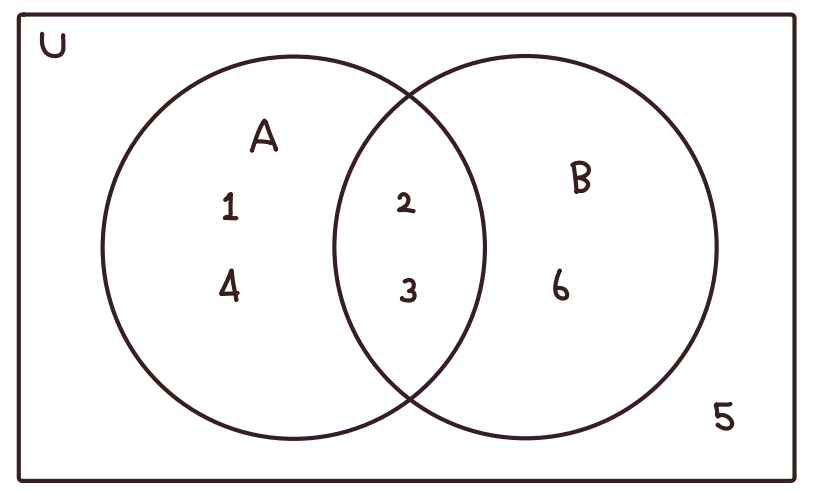
ตัวอักษรภาษาอังกฤษในเซตแทนเป็นชื่อเซต
คือ การนำเซตตั้งแต่ 2 เซตขึ้นไปมาทำปฏิสัมพันธ์กันภายใต้เงื่อนไขหรือกฎเกณฑ์ทางคณิตศาสตร์ เพื่อสร้างให้เกิดเป็นเซตใหม่ขึ้นมา เปรียบเสมือนกับการที่เรานำตัวเลขมาบวก ลบ คูณ หรือหารกันในระบบจำนวนทั่วไป เพื่อช่วยในการจัดกลุ่ม วิเคราะห์ และหาความสัมพันธ์ของสมาชิกที่อยู่ภายในเซตเหล่านั้นได้อย่างเป็นระบบ
โดยมีตัวดำเนินการอยู่ทั้งหมด4ตัว ตามแต่ละหัวข้อด้านล่าง
การดำเนินการระหว่างเซตตั้งแต่ 2 เซตขึ้นไป โดยการนำสมาชิกทั้งหมดของทุกเซตมารวมเข้าด้วยกันเป็นเซตใหม่เพียงเซตเดียว ซึ่งถ้าหากมีสมาชิกตัวใดที่ซ้ำกันอยู่ เราจะเขียนแทนด้วยสมาชิกตัวนั้นเพียงครั้งเดียวเท่านั้นตามกฎเกณฑ์ของเซต นิยมเขียนแทนด้วยสัญลักษณ์คล้ายตัวยู $\cup$
ตัวอย่าง เช่นตอบA$\cup$B={1,2,3,4,5,6}
ตอบA$\cup$B={1,2,3,4}
เนื่องจากเซตAและBมีสามาชิก2และ3เหมือนกันจึงเอามาเขียนแค่ตัวเดียว
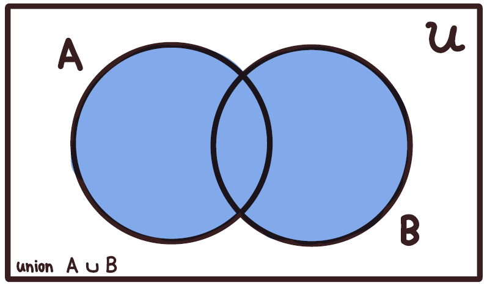
การดำเนินการระหว่างเซตตั้งแต่ 2 เซตขึ้นไป โดยเป็นการเลือกเอาเฉพาะสมาชิกตัวที่ซ้ำกันหรือมีอยู่ร่วมกันในทุกเซตมารวมกันเพื่อสร้างเป็นเซตใหม่ ซึ่งหากไม่มีสมาชิกตัวใดที่มีค่าเหมือนกันหรือซ้ำกันเลย ผลลัพธ์ที่ได้จากการอินเตอร์เซกชันนั้นจะเป็นเซตว่าง นิยมเขียนแทนด้วยสัญลักษณ์คล้ายตัวยูคว่ำ $\cap$
ตัวอย่าง เช่นตอบA$\cap$B={3} เพราะในเซตAและBมีสมาชิกที่ซ้ำกันคือ3
ตอบA$\cup$B=$\varnothing$ เพราะไม่มีสมาชิกที่ซ้ำกันทั้งในเซตAและB
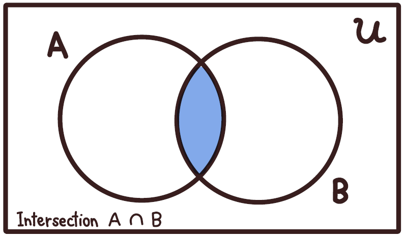
ประพจน์ (Proposition) คือ ประโยคบอกเล่าหรือปฏิเสธที่เราสามารถบอกได้ชัดเจนว่ามัน
"เป็นจริง (True - $T$)"หรือ"เป็นเท็จ(False - $F$)"อย่างใดอย่างหนึ่งเท่านั้น
เวลาเราเอาประพจน์หลายๆ อันมาต่อกัน เราจะใช้ตัวเชื่อม ให้จำ "จุดเด่น" ของแต่ละตัวไว้ | ชื่อตัวเชื่อม | สัญลักษณ์ | กฎเหล็ก (ท่องแค่นี้พอ!)
หากจำตารางนี้ได้โจทย์ทั้งหมดจะง่ายขึ้นแบบ300%
ตารางค่าความจริงของประพจน์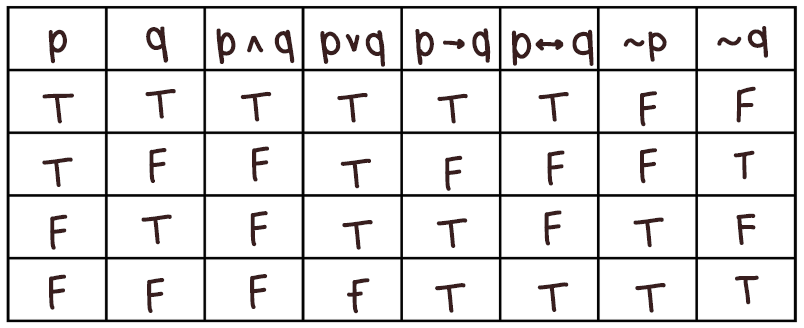
สมมูล คือ ประพจน์สองอันที่หน้าตาต่างกัน แต่ "มีค่าความจริงเหมือนกันทุกกรณี" มีทั้งหมด22ค่าสมมูล
รูปภาพแสดงค่าสมมูลทั้ง22ค่าสมมูล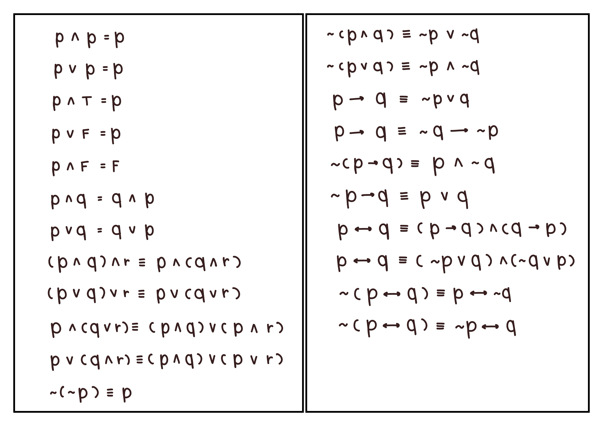
โดยกำหนดให้:
p คือ ค่าความจริงตัวแรก , q คือ ค่าความจริงตัวที่2 , T คือ ค่าความจริงที่เป็นจริง และ F คือ ค่าความจริงที่เป็นเท็จ
คือรูปแบบของประพจน์ที่ "เป็นจริง ($T$) เสมอ ไม่ว่าสถานการณ์ใดๆ ก็ตาม" วิธีเช็กเมื่่อโจทย์มีตัวเชื่อมเป็น
หรือ ($\lor$) , ถ้า...แล้ว ($\rightarrow$) คือ การหาข้อขัดแย้ง หรือหาได้จากการเทียบตารางค่าความจริงของพจน์แต่ละตัว
$[(p \to q) \land p] \to q$ เป็นสัจนิรันดร์หรือไม่
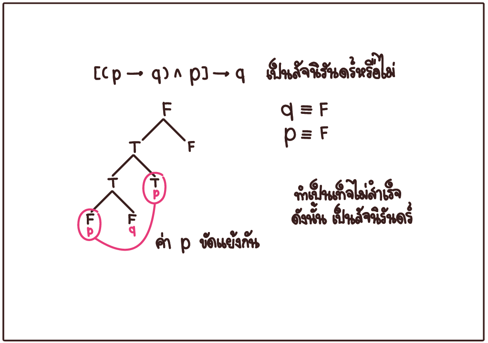
$[(p \to q) \lor r] \lor (r \lor q)$ เป็นสัจนิรันดร์หรือไม่
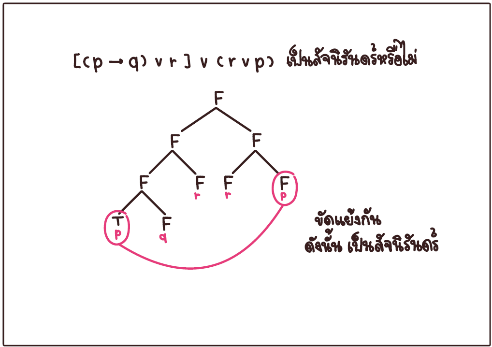
$(p \lor q) \to (q \lor p)$ เป็นสัจนิรันดร์หรือไม่
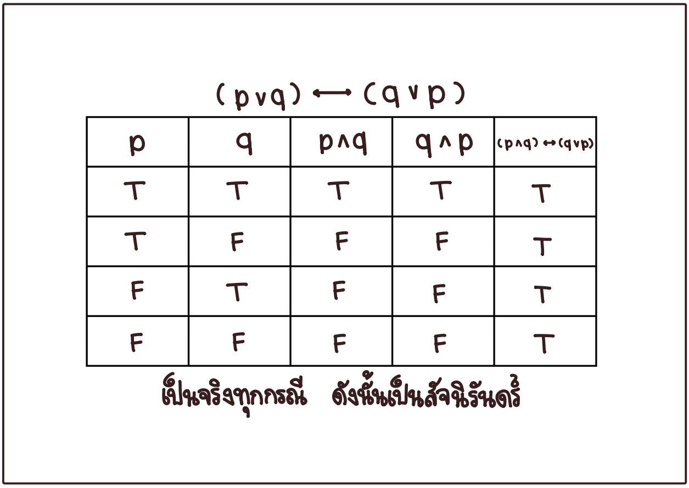
$(p \lor q) \rightarrow (p \land q) \land p $ เป็นสัจนิรันดร์หรือไม่
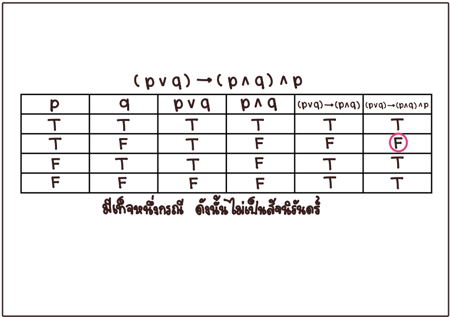
การอ้างเหตุผลในตรรกศาสตร์ คือ การพิสูจน์ว่า "ข้อสรุป" (Conclusion) สมเหตุสมผลหรือไม่ โดยอาศัยกลุ่มของ "ข้ออ้าง" (Premises) ที่เรายอมรับว่าเป็นจริง หากเราพบว่าในกรณีที่ข้ออ้างทุกข้อเป็นจริง แล้วส่งผลให้ข้อสรุป ต้องเป็นจริงตามไปด้วยเสมอ จะเรียกว่า สมเหตุสมผล (Valid) แต่ถ้ามีแม้เพียงกรณีเดียวที่ข้ออ้างเป็นจริงหมด แต่ข้อสรุปกลับเป็นเท็จ จะเรียกว่า ไม่สมเหตุสมผล (Invalid) สามารถหาได้2วิธี คือ การทำตารางค่าความจริง(ไม่มีในตัวอย่าง) และ การหาข้อขัดแย้ง ซึ่งวิธีที่ไวที่สุดคือวิธีหาข้อขัดแย้งเหมือนสัจนิรันดร์แค่รอบนี้หากทำเป็น F ไม่สำเร็จจะถือว่าสมเหตุสมผล ถ้าทำเป็น F สำเร็จจะถือว่าไม่สมเหตุสมผล
โดยตรงส่วนเหตุผลจะใช้ตัวเชื่อมประพจน์เป็น $(\land)$ แล้วตรงผลจะเชื่อมด้วย $(\rightarrow)$
กำหนดให้
เหตุการณ์ที่1 :ถ้าวันนี้ฝนไม่ตกแล้วถนนจะเปียก
เหตุการณ์ที่2 :วันนี้ถนนไม่เปียก
ผล :วันนี้ฝนไม่ตก
จงหาว่าเหตุการนี้สมเหตุสมผลหรือไม่
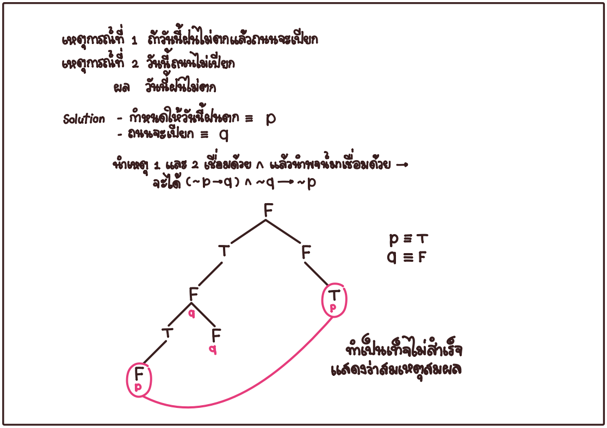
กำหนดให้
เหตุการณ์ที่1 :$p \rightarrow (q \lor r)$
เหตุการณ์ที่2 :$(~q \land ~r)$
ผล :~p
จงหาว่าเหตุการนี้สมเหตุสมผลหรือไม่
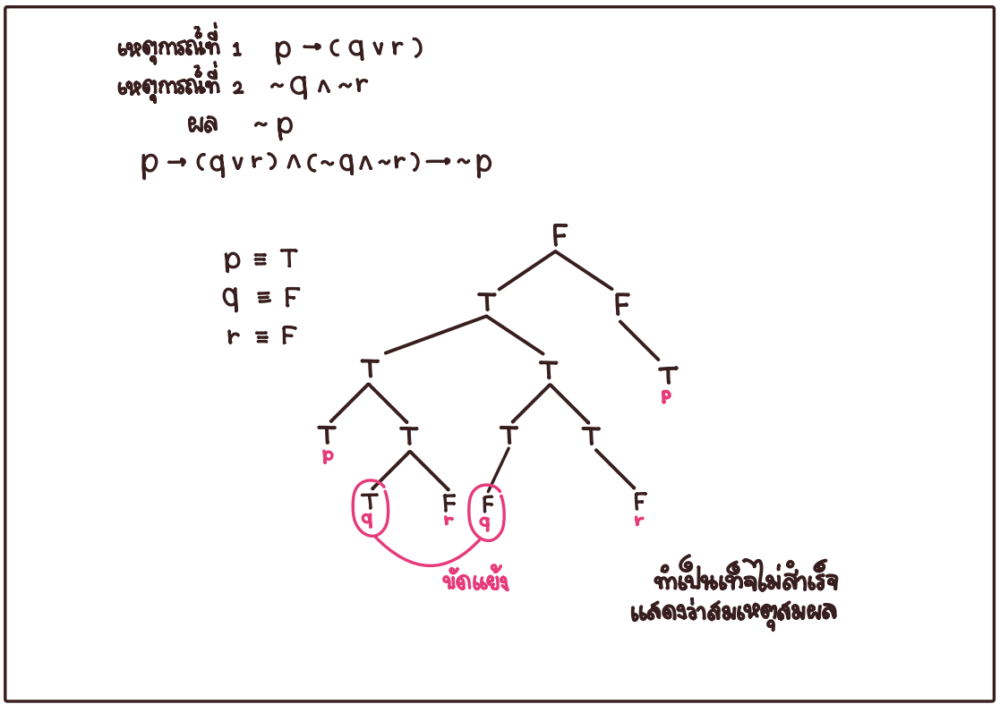
ประโยคเปิด (Open Sentence) คือ ประโยคบอกเล่าหรือปฏิเสธที่มี "ตัวแปร" รวมอยู่ด้วย ทำให้เรายังตอบไม่ได้ทันทีว่าเป็นจริงหรือเป็นเท็จ แต่ถ้าเราลองเอาคำหรือตัวเลขไปแทนที่ตัวแปรนั้น ประโยคจะกลายเป็น "ประพจน์" ที่บอกได้ทันทีว่าเป็นจริงหรือเท็จ
ตัวอย่างเช่น$x + 3 = 5$ (เป็นประโยคเปิด เนื่องจากเราไม่รู้ค่าของxจึงไม่ทราบว่าประพจน์นี้เป็นจริงหรือเท็จ)
"เขา" เป็นนักร้องนำวงบอดี้สแลม (เป็นประโยคเปิด เนื่องจากเราไม่รู้ว่า"เขา"เป็นใครจึงไม่ทราบว่าประพจน์นี้เป็นจริงหรือเท็จ)
$y$ เป็นจำนวนคู่ที่น้อยกว่า $10$ (เป็นประโยคเปิด เนื่องจากเราไม่รู้ว่าค่าyเป็นจำนวนคู่หรือคี่และมีค่าน้อยกว่า10จริงหรือไม่เราจึงไม่ทราบว่าประพจน์นี้เป็นจริงหรือเท็จ)
ตัวบ่งปริมาณ (Quantifiers) คือ ข้อความที่ใช้บอก "จำนวนหรือขอบเขต" ของตัวแปรในประโยคเปิด เพื่อระบุว่าสิ่งที่เรากำลังพูดถึงนั้นหมายถึง ทั้งหมด หรือแค่ บางส่วน โดยเมื่อใส่ตัวบ่งปริมาณเข้าไปหน้าประโยคเปิดแล้ว จะทำให้ประโยคนั้นกลายเป็นประพจน์ที่บอกได้ทันทีว่าเป็นจริงหรือเท็จ โดยที่เราจะใช้สัญลักษณ์ $\forall$ แทนประพจน์ที่ต้องเป็นจริงทั้งหมด อ่านว่าFor All และสัญลักษณ์ $\exists$ แทนประพจน์ที่ต้องเป็นจริงบางส่วน อ่านว่าFor Some
ตัวอย่างประโยคFor All ($\forall$)ตอบจริง ($T$) เนื่องจากมนุษย์ทุกคนต้องหายใจเพื่อดำรงชีวิต
ตอบเท็จ ($F$) เนื่องจากวัยรุ่นบางคนก็ไม่ได้ชอบเล่นเกม
ตอบจริง ($T$) เนื่องจากเมื่อนำxมาแทนไม่ว่าจะเป็นตัวอะไรก็ตามเมื่อนำมา+0จะได้ตัวมันเองเสมอ
ตอบเท็จ ($F$) เนื่องจากเมื่อนำxมาแทนยังมีเลข0และจำนวนติดลบที่มีค่าไม่มากกว่า0
ตอบจริง ($T$) เนื่องจากมีนักเรียนบางส่วนสามารถขับรถยนต์ได้
ตอบเท็จ ($F$) เนื่องจากไม่มีสุนัขตัวไหนสามารถบินได้ในโลกนี้
ตอบจริง ($T$) เนื่องจากเมื่อนำxมาแทนมีเลข2และ-2ที่เมื่อนำมายกกำลังสองแล้วมีค่าเท่ากับ4
ตอบเท็จ ($F$) เนื่องจากมีเมื่อนำxมาแทนไม่มีตัวเลขตัวไหนที่เมื่อนำตัวเองมาบวกกับ1แล้วจะได้ตัวมันเอง
ให้มองว่า จำนวนจริง หรือสัญลักษณ์ $\mathbb{R}$ (Real) คือ "จักรวาลของตัวเลข" ที่เราใช้ในชีวิตประจำวันทั้งหมด ไม่ว่าจะเป็นเลขบวก เลขลบ เศษส่วน ทศนิยม หรือค่าราก (รูท) ทุกอย่างรวมอยู่ในกลุ่มนี้หมดเลย
จักรวาลของจำนวนจริงนี้ ถูกแบ่งออกเป็น 2 กลุ่ม คือ ตรรกยะ กับ อตรรกยะคือ จำนวนที่เขียนในรูป เศษส่วนได้ โดยที่ตัวเศษและส่วนเป็นจำนวนเต็ม โดยที่ตัวส่วนต้องมีค่าไม่เท่ากับ0 นั่นคือจำนวนที่เขียนได้ในรูปเศษส่วนของจำนวนเต็ม หรือเขียนเป็นทศนิยมซ้ำได้
ตัวอย่างของจำนวนตรรกยะ เช่น$7$, $-2$, $0.988998899889$ $1.5$, $\frac{4}{5}$, $0.3\dot{3}$, $0$
คือ จำนวนที่เป็นทศนิยมแบบไม่ซ้ำ (และเป็นทศนิยมไม่รู้จบ ก็คือตัวเลขหลังทศนิยมไม่มีที่สิ้นสุดด้วย) ซึ่งจำนวนชนิดนี้ไม่สามารถเขียนเป็นเศษส่วนของจำนวนเต็มได้ ตัวอย่างของจำนวนตรรกยะ เช่น
$\sqrt{2}$, $0.988998899889...$, $π$, $\sqrt[3]{4}$, $1-\sqrt{2}$, $0$
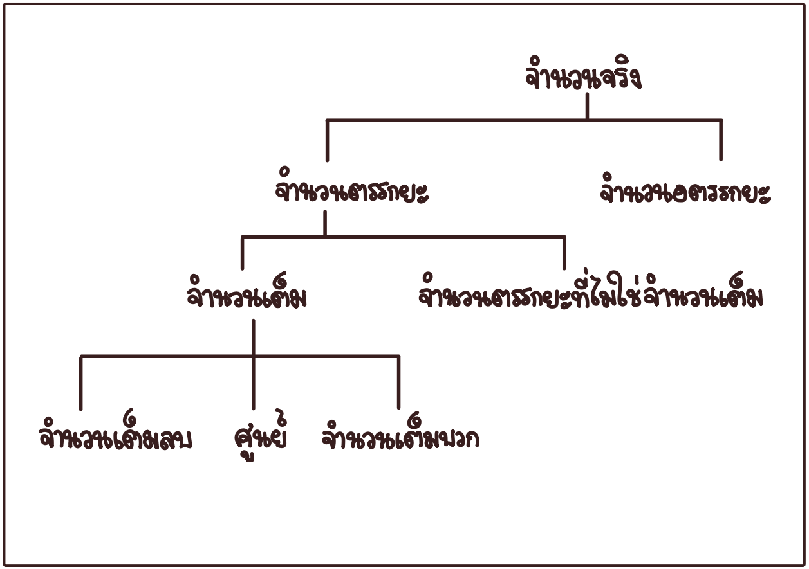
สัญลักษณ์ของเซตของจำนวนจริงชนิดต่าง ๆ ที่ควรรู้จัก ได้แก่
คำว่า "สัจพจน์" คือความจริงพื้นฐานที่ทุกคนยอมรับตรงกันโดยไม่ต้องพิสูจน์ สำหรับเรื่องการเท่ากัน ($=$) มีสัญชาตญาณ 4 ข้อที่เราใช้กันอยู่ตลอดเวลา ได้แก่
$a$ = $a$
ถ้า $a$ = $b$ แล้ว $b$ = $a$
ถ้า $a = b$ และ $b = c$ แล้ว $a = c$
ถ้า $a = b$ แล้ว $a + c = b + c$
ถ้า $a = b$ แล้ว $ac = bc$
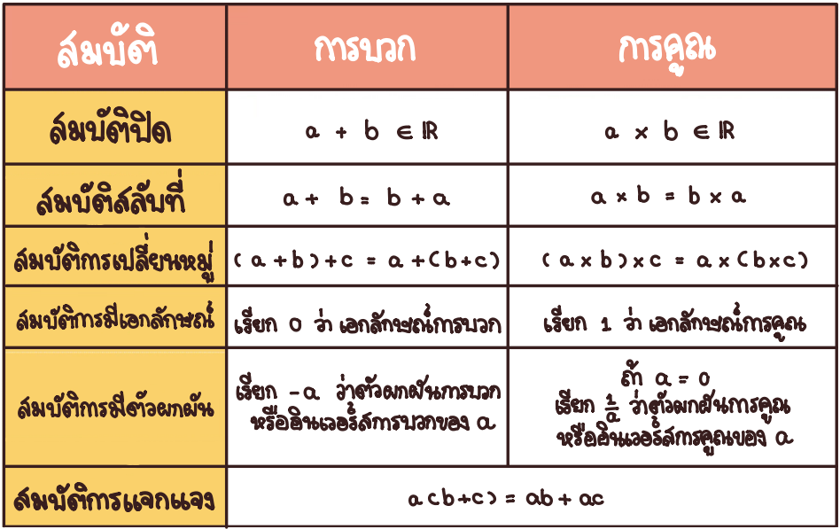
สมบัติข้างต้น โดยเฉพาะสมบัติการสลับที่ สมบัติการเปลี่ยนหมู่ และสมบัติการแจกแจง สามารถช่วยให้หาผลลัพธ์จากการบวกและการคูณของจำนวนจริงทำได้สะดวกขึ้นด้วย อย่างเช่นในตัวอย่างต่อไปนี้
ตัวอย่าง เช่นจงหาผลบวกของ $2 + 8 + 3 + 5 + 2 + 5$
วิธีคิด
ถ้าเราไม่ใช้สมบัติข้างต้น เราจะต้องดำเนินการบวกจากจำนวนทางซ้ายสุดมาขวาสุด ซึ่งจะไม่สะดวกเลย แต่ถ้าเราใช้สมบัติมาช่วยจะสามารถสลับที่และเพิ่มวงเล็บ(จัดหมู่) จะช่วยให้เราหาผลบวกได้ง่ายขึ้น ดังนี้
$2 + 8 + 3+ 5 + 2 + 5 = (5+5) + (2+8) + (2+3) = 10 +10 + 5 = 25$
จงหาผลคูณของ $2 × 8 × 3 × 5 × 2 × 5$
วิธีคิด
เราสามารถใช้สมบัติการคูณของจำนวนจริงช่วยในการหาคำตอบได้เช่นเดียวกับตัวอย่างก่อนหน้า ดังนี้
$2 × 8 × 3 × 5 × 2 × 5 = (2 × 5) + (2 × 5) + (3 × 8) = 10 × 10 × 24 = 2400$
$p(x) = a_nx^n + a_{n-1}x^{n-1} + a_{n-2}x^{n-2} + \cdots + a_1x + a_0$
เมื่อ$n$เป็นจำนวนเต็มที่ไม่เป็นจำนวนลบ
และ$a_n, a_{n-1}, a_{n-2}, \ldots, a_1, a_0$ เป็นจำนวนจริง
เรียก $p(x)$ ว่า พหุนามดีกรี $n$
เรียก $n$ ว่า ดีกรี ของ $p(x)$
เรียก$a_n, a_{n-1}, a_{n-2}, \ldots, a_1, a_0$ว่า สัมประสิทธิ์ ของ $p(x)$
เรียก$a_n$ว่า สัมประสิทธิ์นำ
เช่น$q(x)=3x^2+4x+5$
เป็นพหุนามที่มีดีกรี 2 มีสัมประสิทธิ์เป็น 3, 4 และ 5 และมีสัมประสิทธิ์นำเป็น 3
ในส่วนของการดำเนินการของพหุนาม ซึ่งประกอบด้วย การบวก ลบ คูณ หารพหุนาม ทางเราขอทบทวนความรู้ ม.ต้น ได้แก่ การบวก ลบ และคูณพหุนาม ซึ่งเรามาทบทวนผ่านตัวอย่างต่อไปนี้กันเลย
ให้ $p(x) = x - 2$ และ $q(x) = 2x - 1$ จงหา $p(x)+q(x),\; p(x)-q(x)\; \text{และ}\; p(x)q(x)$
จะได้$p(x)+q(x)=(x-2)+(2x-1)=x+2x-2-1=3x-3$
$p(x)-q(x)=(x-2)-(2x-1)=x-2-2x+1=-x-1$
$p(x)q(x)=(x-2)(2x-1)$
$=x(2x)+(x)(-1)+(-2)(2x)+(-2)(-1)$
$=2x^2-5x+2$
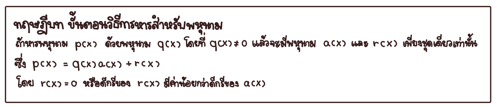
จากทฤษฎีข้างต้นสรุปง่าย ๆ ว่า
$$ตัวตั้ง = (ตัวหาร)(ผลหาร) + เศษเหลือ$$การหารพหุนามนั้นมีได้หลายวิธี เช่น วิธีการหารยาว วิธีเทียบสัมประสิทธิ์ วิธีการหารสังเคราะห์ ฯลฯ แต่ขอพูดแค่หารยาวก็แล้วกัน ซึ่งการหารยาวของพหุนามสามารถทำได้โดยวิธีการตั้งหารคล้ายรูปแบบการหารยาวของจำนวนเต็มดังตัวอย่างต่อไปนี้
ตัวอย่างเช่น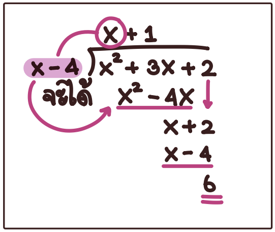
ดังนั้นผลหารคือ $x + 1$ เศษ 6
เทคนิค : ในกรณีที่กำลังเรียงพจน์ของพหุนามตามเลขชี้กำลังจากมากไปน้อย แล้วมีพจน์บางพจน์หายไปให้เติม 0 คูณกับ x ยกกำลังเลขที่หายไป
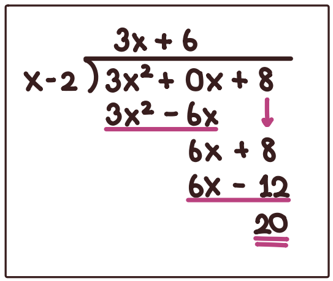
ดังนั้น ผลหารคือ 3x + 6 เศษ 20
การแยกตัวประกอบของพหุนาม ซึ่งเป็นส่วนสำคัญทั้งการจัดรูปพหุนามให้อยู่ในรูปอย่างง่าย รวมถึงเป็นวิธีการหลักในการแก้สมการและอสมการพหุนาม การแยกตัวประกอบของพหุนามดีกรีสูงกว่าสองแต่ไม่ได้มีรูปแบบเฉพาะ โดยใช้ทฤษฎีที่สำคัญ อยู่ 2 ทฤษฎี ได้แก่ ทฤษฎีบทเศษเหลือและทฤษฎีบทตัวประกอบตรรกยะ
ตัวอย่างจงหาเศษเหลือของ $3x^2+1$ หารด้วย $x-1$
วิธีทำให้ $p(x) = 3x^2+1$
จากทฤษฎีบทเศษเหลือ เมื่อหาร $p(x)$ ด้วย $x-1$ จะเหลือเศษคือ $p(1)$
จะได้ $p(1) = 3(1)^2+1 = 4$
ดังนั้น เศษเหลือของ $3x^2+1$ หารด้วย $x-1$ คือ $4$
จาก ทฤษฎีบทเศษเหลือ ถ้าเราหาค่า $c$ ที่ทำให้ $p(c) เป็น 0$ นั่นคือการหารนั้นจะมีเศษเหลือจากการหารเป็น $0$ ซึ่งการที่เศษเป็น $0$ ก็คือการหารลงตัวนั่นเอง ซึ่งถ้าหารลงตัวแล้วแสดงว่า $x - c$ จะเป็นหนึ่งในตัวประกอบของ $p(x)$ เราสามารถกล่าวเป็นทฤษฎีบทได้ดังนี้
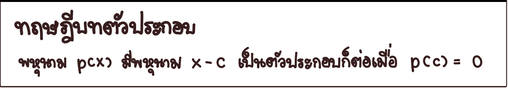
ตัวอย่างจงตรวจสอบว่า $ x-1 $ เป็นตัวประกอบของ $x^2 + 2x - 8$ หรือไม่
วิธีทำให้ $p(x) = x^2 + 2x - 8$
ดังนั้น $p(1) = (1)^2 + 2(1) - 8 = -5$ซึ่งไม่เท่ากับ$0$
จึงสรุปได้ว่า $ x - 1 $ ไม่เป็นตัวประกอบของ $x^2 + 2x - 8$
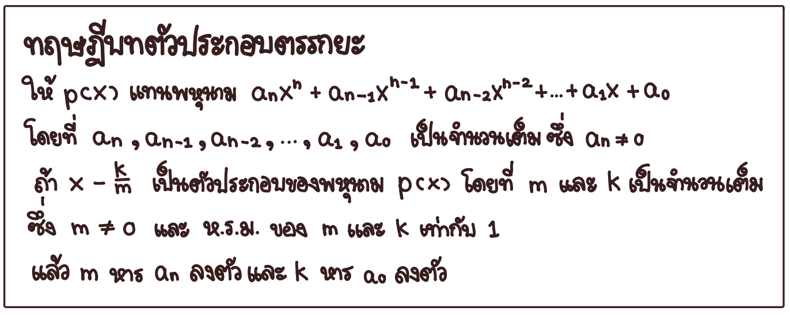
จงแยกตัวประกอบของ $p(x)=2x^2+5x-3$
วิธีทำให้ $p(x)=2x^2+5x-3$
เนื่องจากจำนวนเต็มที่หาร $-3$ ลงตัว คือ $\pm1,\ \pm3$
และจำนวนเต็มที่หาร 2 ลงตัว คือ $\pm1,\ \pm2$
ดังนั้น จำนวนตรรกยะ $\frac{k}{m}$ ที่ทำให้ $p(\frac{k}{m}) = 0$ จะอยู่ในกลุ่มของจำนวนต่อไปนี้ คือ $\pm1,\ \pm3,\ \pm\frac{1}{2},\ \pm\frac{3}{2}$
พิจารณา $p(\frac{1}{2})$
จะได้ว่า $p\left(\frac{1}{2}\right)=2\left(\frac{1}{2}\right)^2+5\left(\frac{1}{2}\right)-3=\frac{1}{2}+\frac{5}{2}-3=0$
นั่นคือ $x-\frac{1}{2}$ เป็นตัวประกอบของ $p(x)$
นำ $x-\frac{1}{2}$ ไปหาร $p(x)$ ได้ผลหารเป็น $2x + 6$
ดังนั้น
$2x^3+5x-3=\left(x-\frac{1}{2}\right)(2x+6)$
$=\left(x-\frac{1}{2}\right)(2)(x+3)$
$=(2x-1)(x+3)$
จากตัวอย่างข้างต้น บางคนที่ยังสงสัยอยู่ว่า จำนวน$\pm1,\ \pm3,\ \pm\frac{1}{2},\ \pm\frac{3}{2}$ เหล่านี้มาจากไหนขอสรุปไว้ข้างท้ายนี้อีกครั้งว่า ตัวเศษได้มาจากตัวประกอบของ -3 และตัวส่วนได้มาจากตัวประกอบของ 2 โดย ห.ร.ม. ของตัวเศษและตัวส่วน คือ 1 นั่นเอง
เราจะแก้สมการที่ตัวแปรมีเลขชี้กำลังที่มากขึ้น แต่เราจะใช้หลักการแก้สมการกำลังสองร่วมกับทฤษฎีบทตัวประกอบในหัวข้อก่อน สำหรับหลักการแก้สมการพหุนาม (ทั้งกำลังสองและกำลังที่สูงกว่าสอง) วิธีหลัก ๆ ที่นิยมใช้กันคือวิธีการแยกตัวประกอบ และอีกวิธีคือการใช้สูตร
ตัวอย่าง เช่นจงหาค่าของ $x$ เมื่อ $x^2+3x-54=0$
วิธีทำทำการแยกตัวประกอบพหุนาม
$x^2+3x-54=0$
$(x-6=0)(x+9)=0$
จะได้ $x-6=0$ หรือ $x+9=0$
ดังนั้น $x = 6 หรือ -9$
ตัวอย่างข้างต้นคือวิธีการแยกตัวประกอบ ส่วนการใช้สูตรจะมีสูตรและตัวอย่างการใช้ดังนี้
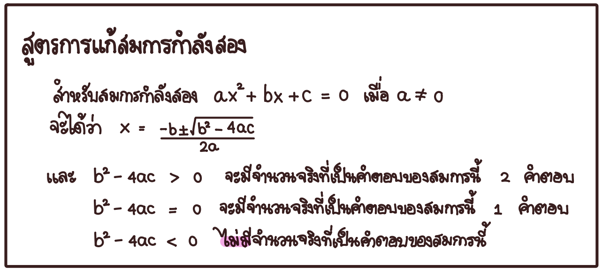
ตัวอย่าง เช่นจงหาค่าของ $x$ เมื่อ $x^2-6x+9=0$
วิธีทำเทียบสัมประสิทธิ์ $ax^2+bx+c=0$ กับ $x^2-6x+9=0$
จะได้ $a=1,b=-6$ และ $c=9$
ซึ่ง$(-6)^2-4(1)(9)=0$ดังนั้นสมการพหุนามนี้มีเพียงคำตอบเดียวนั่นคือ
$x=\frac{-b\pm\sqrt{b^2-4ac}}{2a}$
$=\dfrac{-(-6)\pm\sqrt{0}}{2(1)}=3$
จะได้เซตคำตอบของสมการนี้คือ {$3$}
จงหาค่าของ $x$ เมื่อ $2x^2+3x+4=0$
วิธีทำเทียบสัมประสิทธิ์ $ax^2+bx+c=0$ กับ $2x^2+3x+4=0$
จะได้ $a=2,b=3$ และ $c=4$
ซึ่ง$(3)^2 - 4(2)(4) < 0$ดังนั้นสมการพหุนามนี้ไม่มีจำนวนจริงที่เป็นคำตอบ
ดังนั้น เซตคำตอบของสมการนี้คือ เซตว่าง นั่นเอง
บางคนอาจสงสัยว่าเครื่องหมาย> , = และ < ควรจะใช้ยังไง ง่ายๆคือถ้าคิดเลข$b^2-4ac$ออกมาแล้วมีค่า$> 0$ จำนวนคำตอบที่สามารถตอบได้จะมีแค่2คำตอบ, ถ้ามีค่า$= 0$ จำนวนคำตอบที่สามารถตอบได้จะมีแค่1คำตอบ, ถ้ามีค่า$< 0$ จะไม่มีจำนวนจริงที่เป็นคำตอบ ตามทฤษฏีบทข้างบนที่เคยกล่าวมา
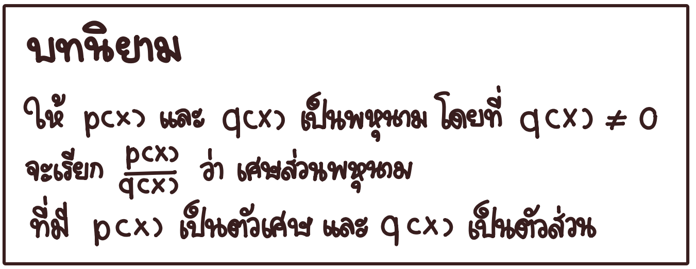
จากบทนิยาม เศษส่วนของพหุนามก็คือ เศษส่วนที่มีตัวเศษและตัวส่วนเป็นพหุนาม เหมือนเอาเศษส่วนและพหุนามมารวมตัวกัน ดังนั้น เศษส่วนของพหุนามก็จะสามารถใช้สมบัติต่าง ๆ ของเศษส่วน และสมบัติต่าง ๆ ของพหุนามมาใช้ในการคำนวณ จัดรูป รวมถึงนำไปใช้แก้สมการและอสมการได้
การดำเนินการของเศษส่วนพหุนามนั้นมีวิธีทำคล้ายคลึงกับการดำเนินการของเศษส่วนจำนวนเต็ม คือมีวิธีการบวก ลบ คูณ และหารเหมือนเศษส่วนที่เราเคยรู้จัก แล้วบางข้ออาจใช้การแยกตัวประกอบของพหุนามในการจัดรูปร่วมด้วย
ตัวอย่าง เช่นกำหนดให้$p(x)=\frac{x+4}{2}$ และ $q(x)=\frac{1}{x+3}$
จงหา $p(x)+q(x),\ p(x)-q(x),\ p(x)q(x)$ และ $\frac{p(x)}{q(x)}$
วิธีทำ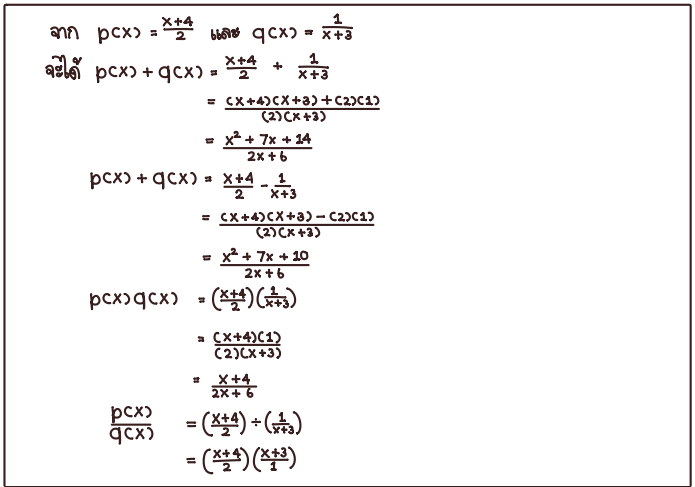
สำหรับการแก้สมการเศษส่วนพหุนามนั้นใช้หลักการแก้สมการพหุนามเหมือนเดิม เพิ่มเติมคือตัวส่วนต้องไม่เป็น 0
ตัวอย่าง เช่นจงหาเซตคำตอบของสมการ $\dfrac{x^2+7x+12}{x^2+3x-4}=0$
วิธีทำ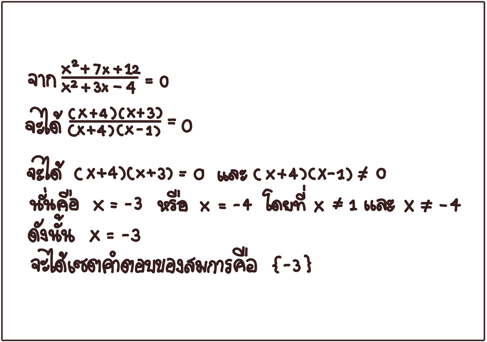
บางคนอาจสงสัยว่า $(x+4)(x-1)\ne 0$ มาจากไหน คำตอบคือ เพราะ $(x+4)(x-1)$ เป็นตัวส่วนซึ่งตัวส่วนต้องไม่เป็น 0
เราจะเเยกตัวประกอบแล้วหาค่า $x$ แต่ละตัวแล้วดูเงื่อนไขว่า $x$ ไม่สามารถเป็นอะไรได้ และตัดคำตอบที่ทำให้ตัวส่วนเป็น 0 ทิ้ง
มาพูดส่วนของ “การไม่เท่ากัน” บ้าง โดยในส่วนนี้จะมีความสัมพันธ์อื่น ๆ ที่น้อง ๆ ต้องรู้จักเพิ่มนอกจากเท่ากับ ได้แก่ มากกว่า “>” น้อยกว่า “<” มากกว่าหรือเท่ากับ “≥” และน้อยกว่าหรือเท่ากับ “≤”
ในส่วนของสัจพจน์เชิงคณิตศาสตร์ของระบบจำนวนจริงเกี่ยวกับ “การเท่ากัน” เราได้กล่าวไปแล้ว ในหัวข้อนี้เราจะลองพูดถึงสัจพจน์ของการไม่เท่ากันของระบบจำนวนจริงดูบ้าง ซึ่งจะมีอยู่ 3 ข้อ ตามนี้เลย
สำหรับ$a \in \mathbb{R}$ และ $b \in \mathbb{R}$ถ้า$a>0$และ$b>0$ แล้ว $a+b>0$
(จำนวนจริงบวก 2 ตัวบวกกันจะได้จำนวนจริงบวก)
ถ้า$a>0$และ$b>0$ แล้ว $ab>0$
(จำนวนจริงบวก 2 ตัวคูณกันจะได้จำนวนจริงบวก)
$a=0$ หรือ $a>0$ หรือ $a < 0$ เพียงอย่างใดอย่างหนึ่ง
(จำนวนจริงไม่สามารถมีค่าเป็นบวก ลบ หรือ 0 พร้อมกันได้)
ถ้า$a \in \mathbb{R}^{+}$แสดงว่า $a$ เป็นจำนวนจริงบวก หรือหมายความว่า $a>0$ บทนิยามที่เกี่ยวกับการไม่เท่ากันของจำนวนจริง คือ
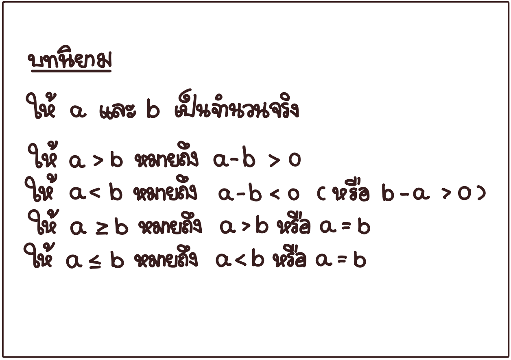
จากบทนิยามที่ได้กล่าวมาอาจจะยังนำไปใช้ประโยชน์โดยตรงได้ไม่เยอะมากนัก นักคณิตศาสตร์เลยนำบทนิยามดังกล่าวไปต่อยอดมาเป็นทฤษฎีบทให้เราสามารถใช้ได้อีกมากมาย
จากทฤษฎีบทข้างบนนี้ สิ่งที่ต้องระวังเป็นพิเศษเลยก็คือ หลังจากคูณหรือหารด้วยจำนวนจริงลบตลอดทั้งอสมการแล้ว อย่าลืมกลับเครื่องหมายอสมการด้วย !!
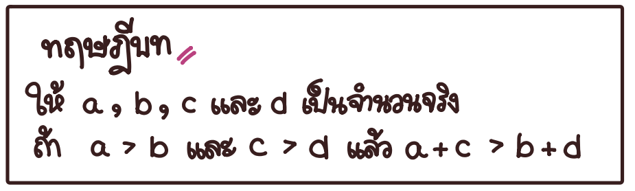
แสดงว่า ถ้าเราสามารถนำสองอสมการมาบวกกันได้เลยตามทฤษฎีบท ยกตัวอย่างเช่น ถ้า $x>5$ และ $y>3$ จะได้ $x+y>8$
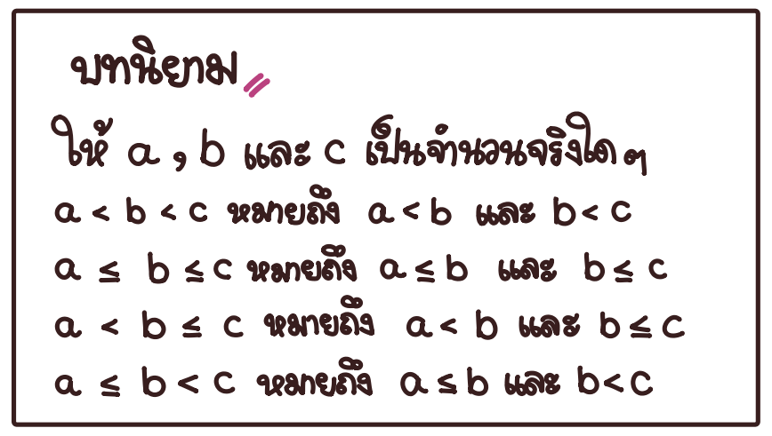
อสมการพหุนามตัวแปรเดียว คือ ประโยคสัญลักษณ์ที่มีตัวแปรเดียวและใช้เครื่องหมายแสดงความไม่เท่ากัน (<, >, ≤, ≥) การหาคำตอบทำได้โดยจัดรูปให้อีกฝั่งของอสมการเป็นศูนย์ แยกตัวประกอบเพื่อหา "ค่าวิกฤต" นำค่าที่ได้ไปเรียงบนเส้นจำนวนจากน้อยไปมาก แล้วเลือกช่วงที่เป็นคำตอบตามเครื่องหมายของอสมการ โดยมีบทนิยามดังนี้
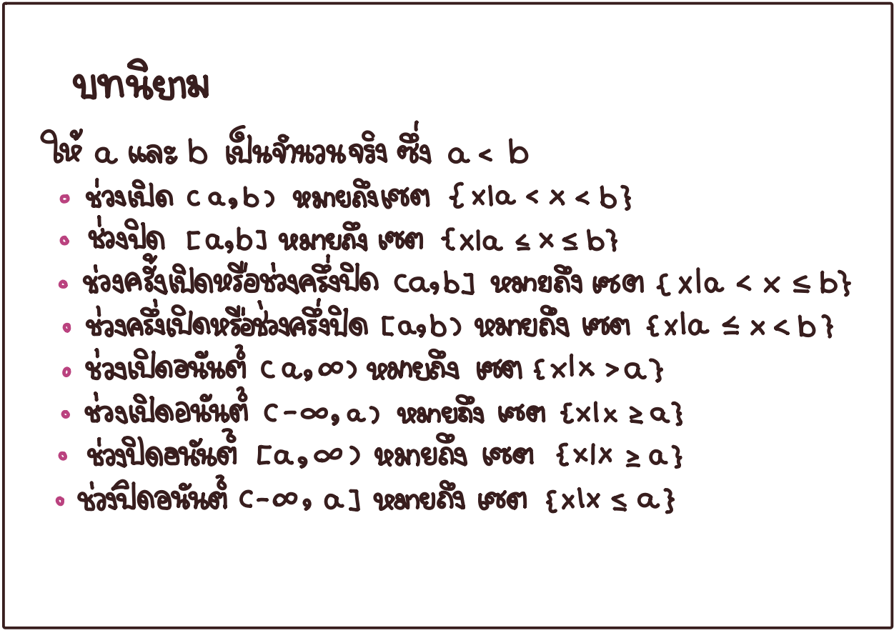
หมายเหตุ :เซตของจำนวนจริง($\mathbb{R}$)สามารถเขียนในรูปช่วง $(-\infty,\infty)$ แทนได้
การเขียนช่วงจากสัญลักษณ์ของช่วงต่าง ๆ ตามนิยามข้างต้น เราสามารถเขียนแทนจำนวนลงบนเส้นจำนวนได้ตามตัวอย่างตามนี้เลย
โดยช่วงปิด$[a,b]$จะใช้เป็น$\bullet$ และช่วงเปิด$(a,b)$ จะใช้เป็น$\circ$
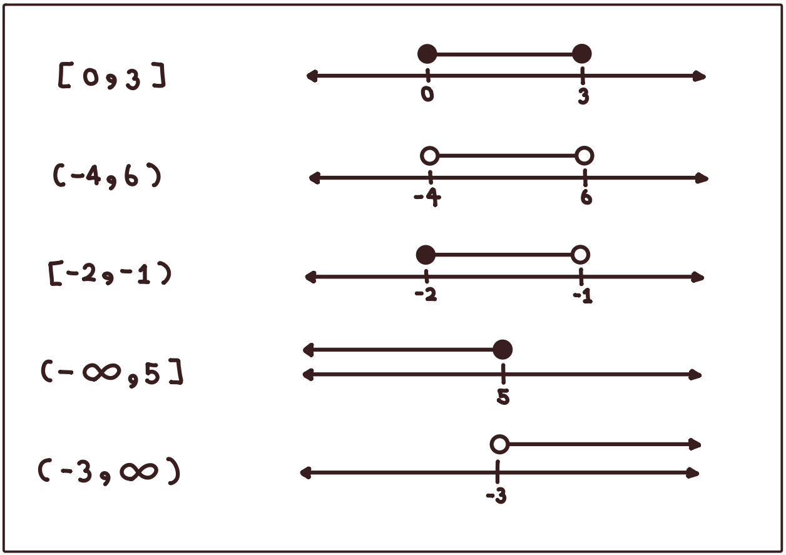
อสมการพหุนามตัวแปรเดียวอสมการ คือประโยคในทางคณิตศาสตร์ที่กล่าวถึงการไม่เท่ากัน เช่น $10 > 8$ คืออสมการที่เป็นจริง หรือ $5 \leq 3$ คืออสมการที่เป็นเท็จ เป็นต้น แต่ในกรณีที่อสมการมีตัวแปรอยู่ด้วย เช่น $3x + 2 > 8$ หรือ $2x - 5 \leq 3$ เราจะมาหาว่า จำนวนจริงตัวไหนบ้างนะที่แทนลงในอสมการนี้แล้ว ทำให้อสมการเป็นจริง โดยจำนวนจริงเหล่านี้เราจะเขียนในรูปของ “เซตคำตอบของอสมการ”
ตัวอย่าง เช่น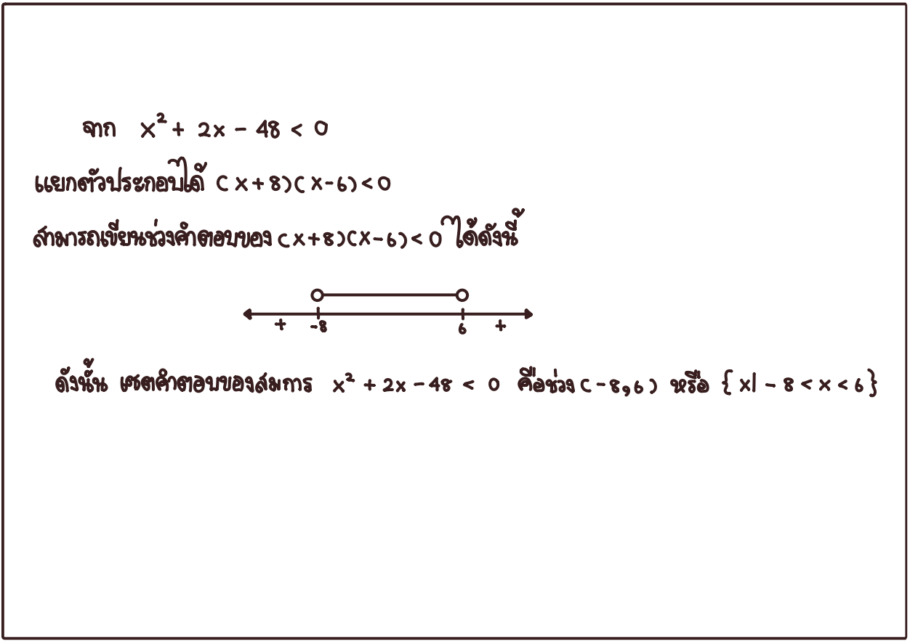
จงหาเซตคำตอบของอสมการ $\dfrac{(x+4)(2x-5)(7-x)}{x}\ge0$
วิธีทำ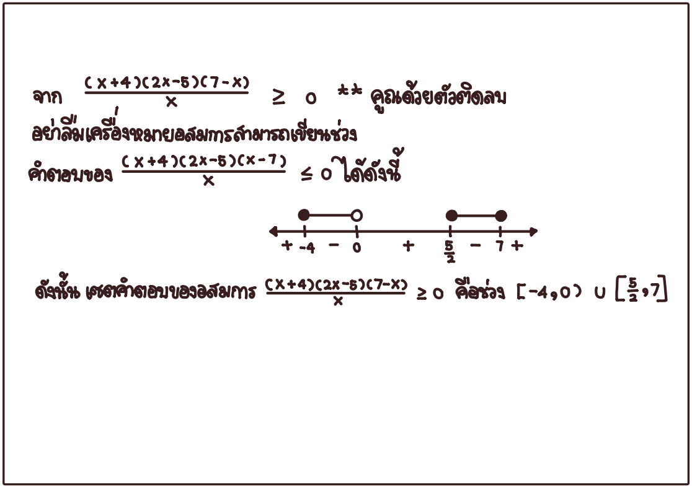
ค่าสัมบูรณ์ (Absolute Value) คือ ระยะห่างระหว่างจำนวนนั้นกับเลขศูนย์บนเส้นจำนวน เนื่องจากเป็นเรื่องของระยะทาง ค่าสัมบูรณ์ที่ได้ออกมาจึงมีค่าเป็นบวกหรือศูนย์เสมอ โดยจะไม่มีทางติดลบเด็ดขาด ในทางคณิตศาสตร์ ค่าสัมบูรณ์จะถูกแทนด้วยสัญลักษณ์เส้นตรงแนวตั้งสองเส้นขนาบข้างจำนวนนั้น($|a|$) และสามารถนิยามตามเงื่อนไขได้ว่า ถ้านำจำนวนที่เป็นบวกหรือศูนย์มาหาค่าสัมบูรณ์ ผลลัพธ์จะได้เท่ากับจำนวนเดิมทันที แต่ถ้านำจำนวนที่ติดลบมาหาค่าสัมบูรณ์ ผลลัพธ์จะถูกเปลี่ยนให้เป็นจำนวนบวกที่เป็นคู่ตรงข้ามของมัน เพื่อสะท้อนถึงระยะทางที่แท้จริงบนเส้นจำนวน เราจะมาดูกันว่า ค่าสัมบูรณ์ของจำนวนจริง จะถูกนิยามว่าอย่างไร
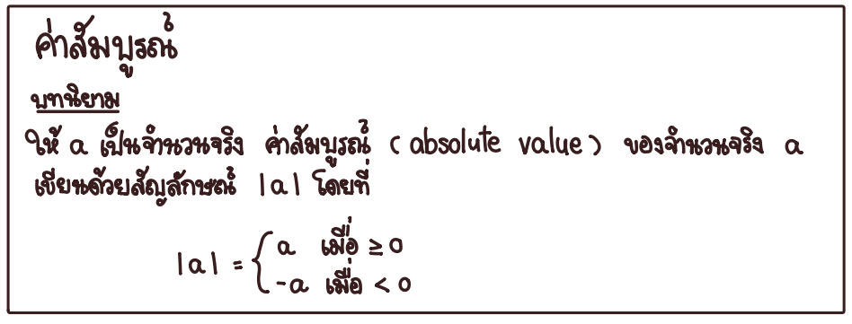
หมายเหตุ :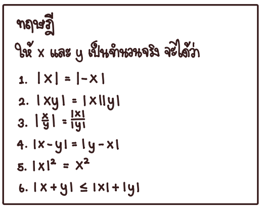
สมการค่าสัมบูรณ์ของพหุนามตัวแปรเดียว คือ สมการที่มีพหุนามตัวแปรเดียวอยู่ภายในเครื่องหมายค่าสัมบูรณ์ การหาคำตอบทำได้โดยการ "ปลดเครื่องหมายค่าสัมบูรณ์" ซึ่งนิยมแยกเป็น 2 สมการย่อย คือ จับพหุนามด้านในเท่ากับค่าที่เป็นบวก และเท่ากับค่าที่เป็นลบของอีกฝั่ง จากนั้นแก้สมการตามปกติ และสิ่งสำคัญที่สุดคือ ต้องนำคำตอบที่ได้กลับไปตรวจทานกับโจทย์ตั้งต้นเสมอ เพื่อตัดคำตอบส่วนเกินที่ไม่สอดคล้องกับธรรมชาติของค่าสัมบูรณ์ออก
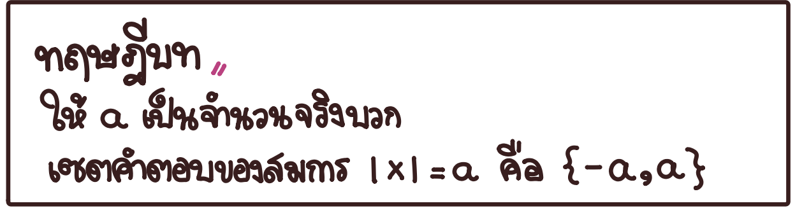
สรุปง่ายๆ คือ $|x| = a$ ก็ต่อเมื่อ $x = -a$ เราลองมาดูตัวอย่างกัน
ตัวอย่าง:จงหาเซตคำตอบของสมการ$\left|2x+3\right|=9$
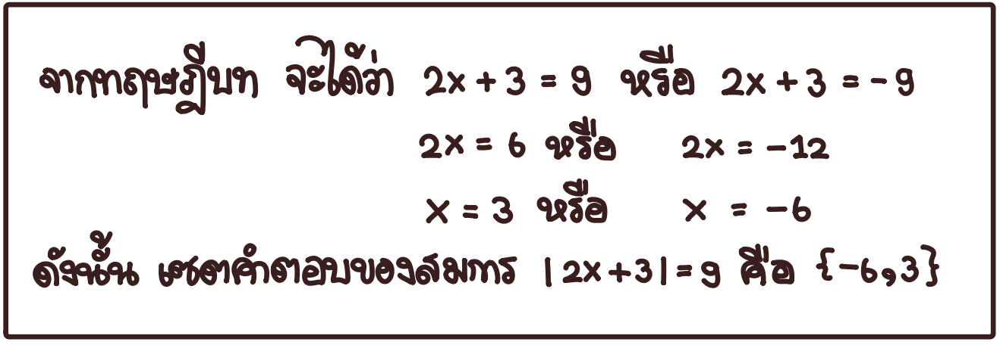
จากตัวอย่างด้านบน พิจารณาที่ $x=a$ และ $x=-a$ ก็จะได้คำตอบเลย แต่ถ้าในกรณีที่นอกเครื่องหมายค่าสัมบูรณ์ติดตัวแปร เราไม่แน่ใจว่าจะนอกเครื่องหมายค่าสัมบูรณ์จะมีค่าเป็นบวก หรือมีค่าเป็นลบ เราจึงต้องพิจารณาทุกกรณีในการถอดเครื่องหมายค่าสัมบูรณ์ที่จะเป็นไปได้ ลองดูตัวอย่างต่อไปให้เข้าใจมากยิ่งขึ้น
จงหาเซตคำตอบของสมการ $\left|x-1\right|=2x-3$
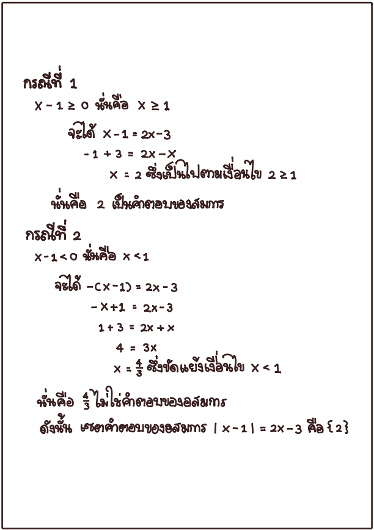
จะเห็นว่า หลังจากที่เราได้คำตอบมาแล้ว ก็ยังไม่สามารถตอบได้ทันที เราต้องนำเงื่อนไขที่กำหนดไว้มาพิจารณาร่วมด้วยและในตัวอย่างถัดไปเราจะมาดูสมการค่าสัมบูรณ์ ที่ทั้งสองข้างอยู่ในรูปค่าสัมบูรณ์กันบ้าง
จงหาเซตคำตอบของสมการ$\left|x-1\right|=\left|2x+1\right|$
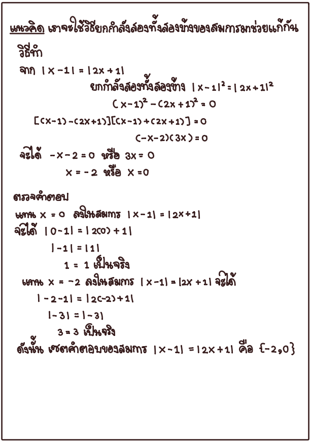
อสมการค่าสัมบูรณ์ของพหุนามตัวแปรเดียว คือ อสมการที่มีพหุนามตัวแปรเดียวอยู่ภายในเครื่องหมายค่าสัมบูรณ์ การแก้จะใช้หลักการ "ปลดเครื่องหมาย" ตามทิศทางของเครื่องหมายอสมการ ดังนี้
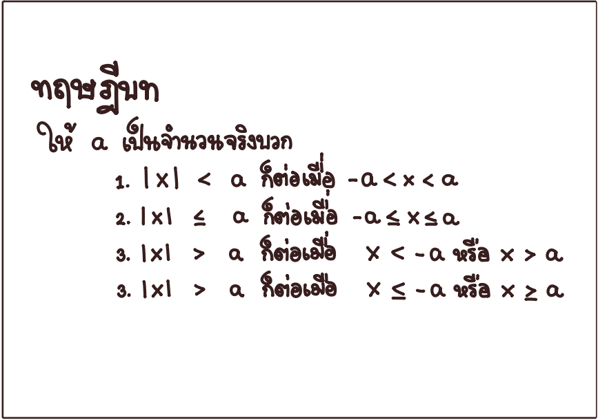
สรุปง่ายๆ คือ $|x| = a$ ก็ต่อเมื่อ $x = -a$ เราลองมาดูตัวอย่างกัน
ตัวอย่าง:จงหาเซตคำตอบของสมการ$|2x + 3| < 9$
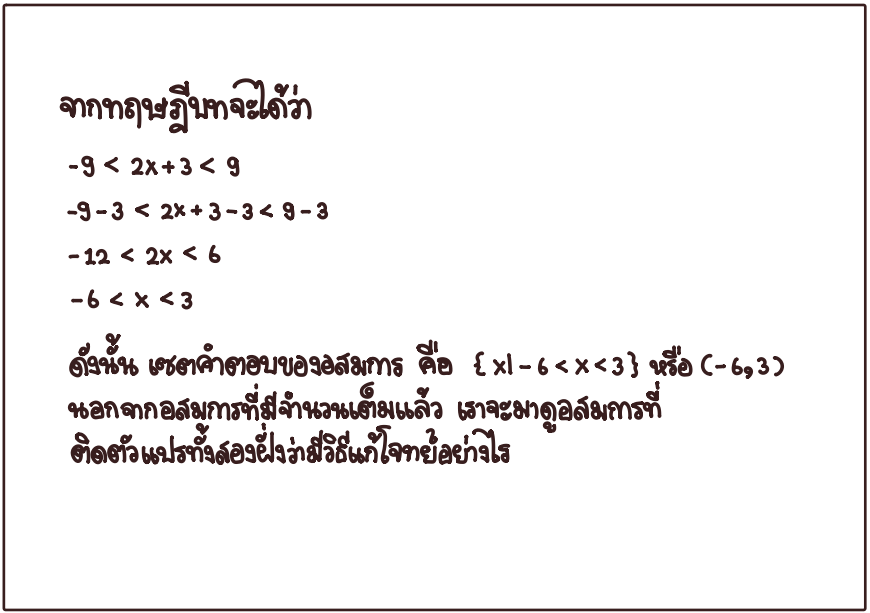
จากตัวอย่างด้านบน แค่น้อง ๆ พิจารณาที่ $x=a$ และ $x=-a$ ก็จะได้คำตอบเลย แต่ถ้าในกรณีที่นอกเครื่องหมายค่าสัมบูรณ์ติดตัวแปร เราไม่แน่ใจว่าจะนอกเครื่องหมายค่าสัมบูรณ์จะมีค่าเป็นบวก หรือมีค่าเป็นลบ เราจึงต้องพิจารณาทุกกรณีในการถอดเครื่องหมายค่าสัมบูรณ์ที่จะเป็นไปได้ ลองดูตัวอย่างต่อไปให้เข้าใจมากยิ่งขึ้น
จงหาเซตคำตอบของสมการ $|x + 1| > x - 3$
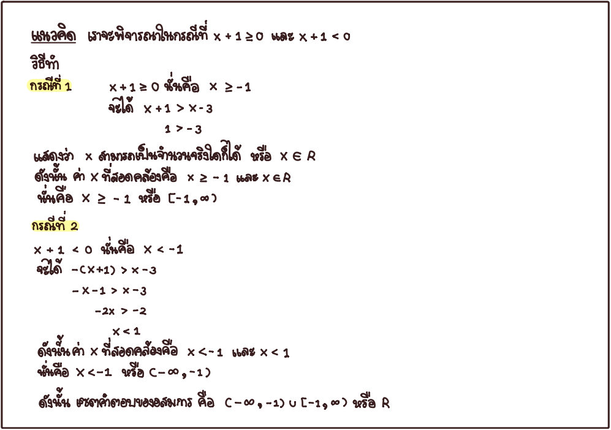
จะเห็นว่า หลังจากที่เราได้คำตอบมาแล้ว ก็ยังไม่สามารถตอบได้ทันที เราต้องนำเงื่อนไขที่กำหนดไว้มาพิจารณาร่วมด้วยและในตัวอย่างถัดไปเราจะมาดูสมการค่าสัมบูรณ์ ที่ทั้งสองข้างอยู่ในรูปค่าสัมบูรณ์กันบ้าง
จงหาเซตคำตอบของสมการ$|x| > |x - 1|$
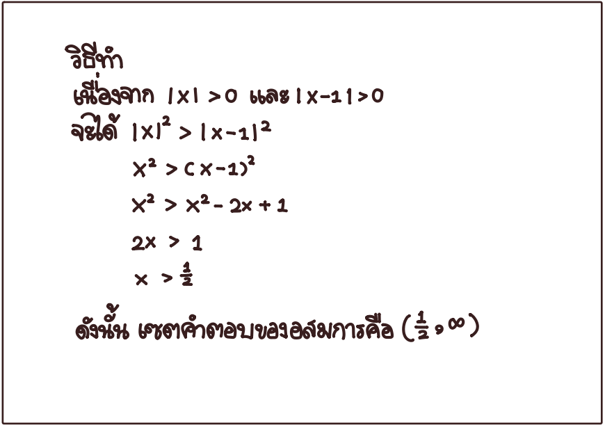
“ความสัมพันธ์” เป็นคำที่เราใช้กันบ่อยมาก เช่น ความสัมพันธ์แบบเพื่อน แฟน Friend Zone หรือ แม้กระทั่งความสัมพันธ์ระหว่างสิ่งของกับสิ่งของก็ตาม อย่างไรก็ตาม นักคณิตศาสตร์อยากลองนิยามคำว่า “ความสัมพันธ์” ให้ชัดเจนว่ามันมีหน้าตาเป็นอย่างไร
ผลคูณคาร์ทีเซียน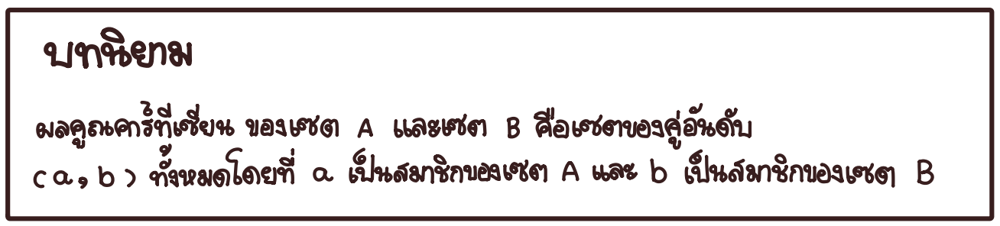
สามารถเขียนผลคูณคาร์ทีเซียนของเซต $A$ และ $B$ ได้ว่า $A \times B$
เช่น กำหนดให้ $A = {1, 2 , 3} และ B = {a, b}
ดังนั้น$A \times B = \{(1, a), (2, a), (3, a), (1, b), (2, b), (3, b)\}$
ความสัมพันธ์
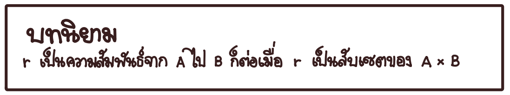
เช่น กำหนดให้ A = {1, 2, 3} และ B = {1, 3}
ถ้า$r_1 = \{(x, y) \in A \times B \mid x < y\}$ จะสามารถเขียนแจกแจงสมาชิกได้ดังนี้$r_1 = \{(1, 3), (2, 3)\}$
หรือเราสามารถเรียกได้ว่า $r_1$ เป็นความสัมพันธ์"น้อยกว่า"จาก $A$ ไป $B$
กราฟของความสัมพันธ์โดยเราสามารถนำความสัมพันธ์มาแสดงเป็นภาพได้โดยนำคู่อันดับในความสัมพันธ์มาแสดงเป็นพิกัดของจุดแล้ววางลงไปบนระนาบ$XY$ก็จะได้ออกมาเป็นกราฟของความสัมพันธ์ต่าง ๆ
กราฟของความสัมพันธ์ $r$ มีอยู่ 3 ลักษณะ
กราฟมีลักษณะเป็นจุด
เช่น $(x,y)$ เป็นสมาชิก $Z \times Z$ ดังรูปด้านล่าง
กราฟมีลักษณะเป็นเส้น
เช่น $(x,y)$ เป็นสมาชิก $R \times R$ มีเงื่อนไขเป็นสมการ ดังรูปด้านล่าง
กราฟมีลักษณะเป็นพื้นที่
เช่น $(x,y)$ เป็นสมาชิก $R \times R$ มีเงื่อนไขเป็นอสมการ
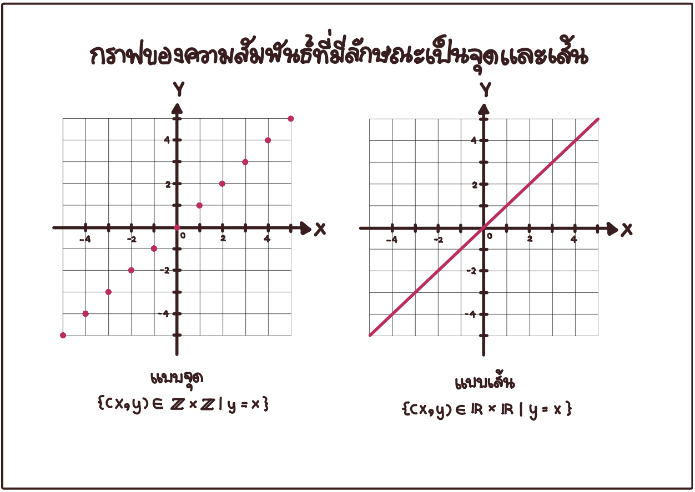
ข้อสังเกตเรานำสมาชิกตัวหน้ามาเป็นค่าตำแหน่งบนแกน $X$ และนำสมาชิกตัวหลังเป็นค่าตำแหน่งบนแกน $Y$ ล้วใช้ค่าตำแหน่งทั้งสองมาเป็นพิกัดในการลงจุดเพื่อวาดกราฟ
โดเมนและเรนจ์ของความสัมพันธ์โดเมน (Domain) และ เรนจ์ (Range) คือ ขอบเขตของค่าในความสัมพันธ์หรือฟังก์ชันที่มีการจับคู่กันระหว่างกลุ่มข้อมูลสองกลุ่ม
โดเมน (Domain): คือ เซตของค่าของตัวแปรต้นทั้งหมด (มักแทนด้วยตัวแปร $x$) ที่สามารถนำไปแทนในความสัมพันธ์หรือฟังก์ชันนั้น ๆ แล้วสามารถคำนวณหรือหาค่าของตัวแปรตามออกมาได้จริง โดยไม่ขัดต่อหลักการทางคณิตศาสตร์
เรนจ์ (Range): คือ เซตของค่าของตัวแปรตามทั้งหมด (มักแทนด้วยตัวแปร $y$) ที่เกิดขึ้นจริงจากการนำสมาชิกในโดเมนไปแทนค่าในความสัมพันธ์หรือฟังก์ชันนั้น
ดังนั้นมาทำความรู้จักกับบทนิยามของโดเมนและเรนจ์กันก่อนเลย
ตัวอย่าง เช่นจงหาโดเมนและเรนจ์จากกราฟของความสัมพันธ์ที่กำหนดให้ต่อไปนี้
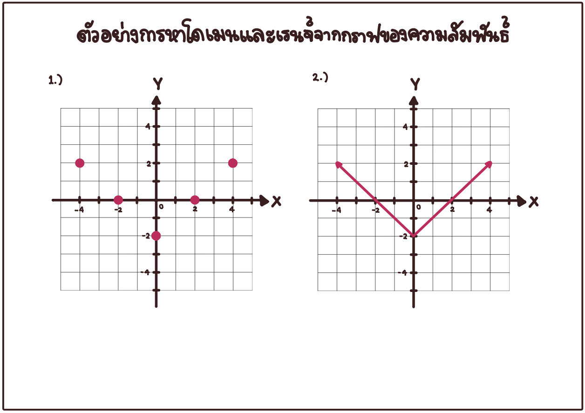
วิธีทำจากข้อ 1)
กำหนดให้เป็นกราฟของความสัมพันธ์ $r_1$
จะได้ว่า $r_1$ = {(-4,2),(-2,0),(0,-2),(2,0),(4,2)}
$D_{r_1}$ = {(-4),(-2),0,2,4} และ $R_{r_1}$ = {(-2),0,2}
จากข้อ 2)
แนวคิดเราสามารถมองเส้นจากกราฟของความสัมพันธ์ $r_2$ ได้ว่าเป็นจุดจำนวนมากเรียงต่อกัน จนกลายเป็นเส้น ดังนั้น วิธีการหาโดเมนและเรนจ์จากกราฟในข้อนี้ สามารถมองได้ด้วยวิธีคล้ายกับกับข้อ 1) สมาชิกตัวหน้าของคู่อันดับจะเป็นจำนวนจริงทั้งหมดเลย (ตั้งแต่$-\infty$จนถึง$\infty$)ถ้าเริ่มมองจากแกน Y ด้านล่างขึ้นมา จะเห็นว่าสมาชิกตัวหลังของคู่อันดับจะเป็นจำนวนตั้งแต่ -2 จนถึง $\infty$
จะได้ว่า$D_{r_2} = R$และ$R_{r_2} = [-2, \infty)$
จากตัวอย่างก่อนหน้า เราสามารถสรุปการหาโดเมนและเรนจ์จากกราฟของความสัมพันธ์ได้เป็นดังนี้
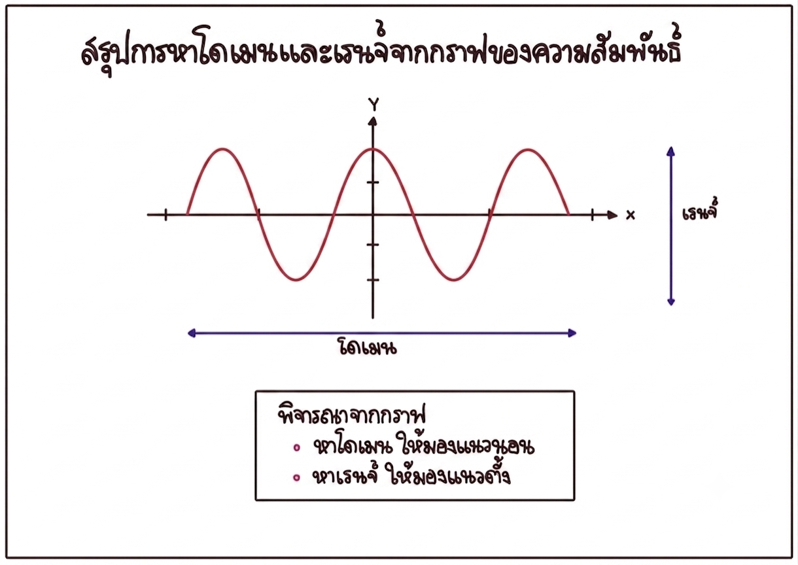
นอกจากการหาโดเมนและเรนจ์จากกราฟของความสัมพันธ์แล้ว ถ้าโจทย์ให้ความสัมพันธ์ที่เขียนในรูปของเซตแบบบอกเงื่อนไข เราจะใช้เทคนิคในการพิจารณาเงื่อนไขแล้วหาโดเมนและเรนจ์ของความสัมพันธ์ ซึ่งจะมีขั้นตอนดังต่อไปนี้
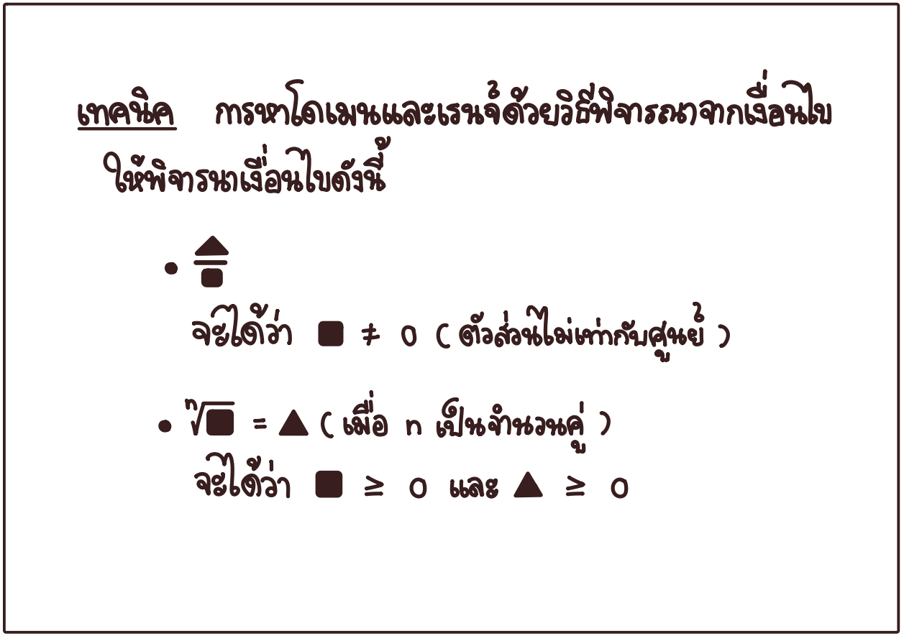
ตัวอย่าง เช่นจงหาโดเมนและเรนจ์ของความสัมพันธ์ต่อไปนี้
$1)\ r_1 = \left\{(x, y) \mid y = \frac{1}{x + 1}\right\}$
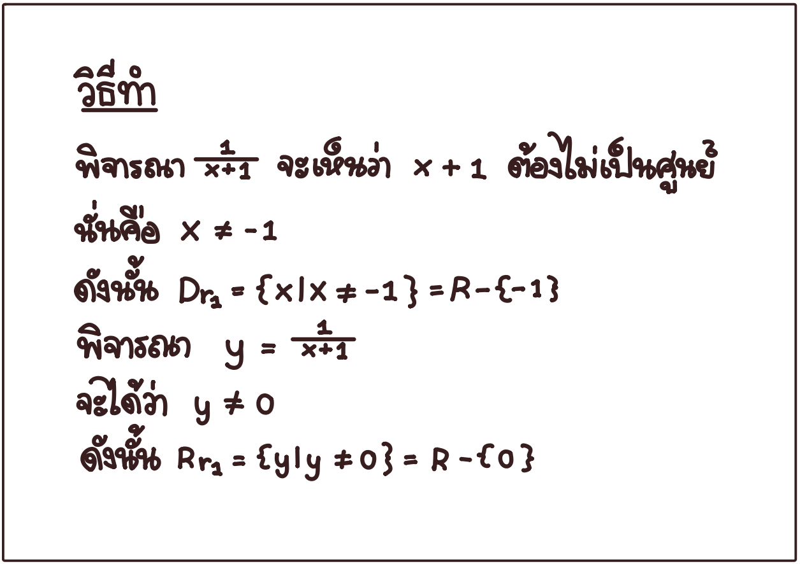
$2)\ r_2 = \left\{(x, y) \mid y = \sqrt{x}\right\}$
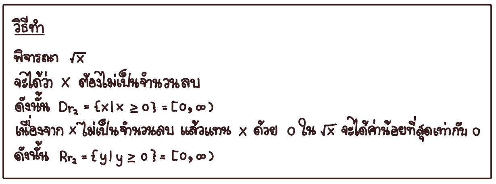
ตัวผกผันของความสัมพันธ์$r$เขียนแทนด้วย$r^{-1}$
เช่น ถ้า $r$ = {(1,2),(3,4),(5,6)} แล้ว $r^{-1}$ = {(2,1),(4,3),(6,5)}
ก่อนหน้านี้เราเคยเขียนความสัมพันธ์ให้อยู่ในรูปเซตแบบบอกเงื่อนไข ดังนั้นเราก็สามารถเขียนตัวผกผันของความสัมพันธ์ให้อยู่ในรูปของเซตแบบบอกเงื่อนไขได้เช่นกัน
เช่นแบบที่1:$r^{-1} = \{(y, x) \in B \times A \mid (x, y) \in r\}$ หรือ
แบบที่2:$r^{-1} = \{(x, y) \in A \times B \mid (y, x) \in r\}$
ลองสังเกตจะเห็นว่าการเขียนทั้งสองแบบเกิดจากการสลับ $x$ และ $y$แต่แบบที่$1$ จะสลับที่ด้านหน้าเพียงอย่างเดียว ส่วนแบบที่ $2$ จะสลับที่เพียงด้านหลังอย่างเดียวเท่านั้น ถ้าใครเผลอไปเขียนตัวผกผันของความสัมพันธ์แล้วสลับทั้งสองที่จะผิดได้นะ !
หลังจากที่เรารู้จักความสัมพันธ์กันไปแล้ว มันก็จะมีความสัมพันธ์บางอย่างที่เราได้ให้ชื่อมันเอาไว้ ซึ่งความสัมพันธ์ประเภทนี้จะเป็นพื้นฐานสำคัญที่นำไปต่อยอดในหัวข้ออื่น ๆ ได้อีกมากมาย ความสัมพันธ์นี้มีชื่อว่า “ฟังก์ชัน”
ความหมายของฟังก์ชันจากบทนิยามข้างต้น ฟังก์ชัน คือ ความสัมพันธ์ที่สมาชิกตัวหน้าแต่ละตัวจะจับกับสมาชิกตัวหลังเพียงค่าเดียวเท่านั้น !!
ฟังก์ชันโดยส่วนใหญ่มักจะเขียนแสดงได้ 3 รูปแบบคือ แผนภาพ เซต และกราฟของฟังก์ชัน โดยกราฟของฟังก์ชันจะถูกใช้บ่อยและมีความสำคัญมาก
เขียนในรูปของแผนภาพ
เขียนในรูปของเซต
สามารถเขียนได้ 2 แบบ คือ แบบแจกแจงสมาชิกตรง ๆ และ แบบบอกเงื่อนไข เช่น
แบบแจกแจงสมาชิก
$f = \{(1, a), (2, b), (3, c)\}$
แบบบอกเงื่อนไข
$g = \{(x, y) \mid y = 2x + 1\}$
กำหนดให้ $A = \{-1, 0, 1\}$จงพิจารณาความสัมพันธ์ต่อไปนี้ว่าเป็นฟังก์ชันหรือไม่
$1.\ f = \{(x, y) \in A \times A \mid y = x\}$
วิธีทำจาก$f$เมื่อเขียนความสัมพันธ์แบบแจกแจงสมาชิกจะได้
$f = \{(-1, -1)(0, 0)(1, 1)\}$
สังเกตว่า สมาชิกของแต่ละตัวใน$f$ไม่มีคู่อันดับตัวไหนเลยที่เลขตัวหน้าในคู่อันดับซ้ำกันดังนั้น$f$เป็นฟังก์ชัน
$2.\ g = \{(x, y) \in A \times A \mid y^2 = x\}$
วิธีทำจาก$g$เมื่อเขียนความสัมพันธ์แบบแจกแจงสมาชิกจะได้
$g = \{(0, 0)(1, 1)(1, -1)\}$
สังเกตว่า$g$มีคู่อันดับ $(1,1)$ และ $(1,-1)$ มีเลขตัวหน้าในคู่อันดับซ้ำกันคือ เลข$1$
ดังนั้น$g$ไม่เป็นฟังก์ชัน
จงพิจารณาว่ากราฟต่อไปนี้เป็นฟังก์ชันหรือไม่
 วิธีทำ
วิธีทำ
ลากเส้นตรงในแนวตั้ง (ขนานแกน $y$) ให้ตัดผ่านกราฟ สังเกตว่า ไม่มีกรณีใดเลยที่เส้นตรงลากผ่านกราฟแล้วเกิดจุดตัดกราฟมากกว่า$1$จุด ดังนั้น กราฟดังกล่าวเป็นฟังก์ชัน
 วิธีทำ
วิธีทำ
ลากเส้นตรงในแนวตั้ง (ขนานแกน $y$) ให้ตัดผ่านกราฟ สังเกตว่า มีกรณีที่เส้นตรงลากผ่านกราฟแล้วเกิดจุดตัดกราฟมากกว่า$1$จุด เช่น

ดังนั้น กราฟดังกล่าวไม่เป็นฟังก์ชัน
ฟังก์ชันที่เราศึกษานั้นสามารถแบ่งออกได้เป็น $3$ ประเภทหลัก ๆ ได้แก่
ฟังก์ชันจาก $A$ ไปยัง $B$
เช่น


สังเกตได้ว่าฟังก์ชัน จาก $A$ ไป $B$ จะมีสมาชิกตัวหน้าอยู่ใน$A$ และสมาชิกตัวหลังอยู่ใน$B$เสมอ โดยสมาชิกใน$A$ะถูกใช้ในฟังก์ชันหมดทุกตัวแต่สมาชิกใน $B$ จะถูกใช้ในฟังก์ชันหมดทุกตัวหรือไม่ก็ได้

เช่น

สังเกตได้ว่าฟังก์ชัน จาก $A$ ไปทั่วถึง $B$ สมาชิกทุกตัวใน $B$ จะถูกใช้ในฟังก์ชันทั้งหมด
ฟังก์ชันหนึ่งต่อหนึ่งจาก $A$ ไป $B$

เช่น

สังเกตได้ว่าฟังก์ชัน 1-1 จาก $A$ ไป $B$ จะถูกใช้ในฟังก์ชันไม่เกิน $1$ ตัวเสมอ
ซึ่งการตรวจสอบกราฟว่าเป็นฟังก์ชัน 1-1 มั้ย สามารถทำได้โดยลากเส้นในแนวนอน(ขนานกับแกน$X$) ให้ตัดกับกราฟถ้ามีกรณีใดเกิดจุดตัดระหว่างกราฟและเส้นในแนวนอนมากกว่า $1$ จุด กราฟดังกล่าวจะไม่เป็นฟังก์ชัน 1-1

 เช่น
เช่น
ให้ $f$ เป็นฟังก์ชันที่มีกราฟดังรูป

$f$ เป็นฟังก์ชันเพิ่มบนช่วง $[-1,1]$ และ
$f$ เป็นฟังก์ชันลดบนช่วง $[-4,-1]$ และ $[1,4]$
เนื่องจาก ฟังก์ชันที่มีโดเมนและเรนจ์เป็นเซตของจำนวนที่สามารถบวก ลบ คูณ และหารได้ ดังนั้นเราจะใช้การดำเนินการต่าง ๆ มาสร้างฟังก์ชันใหม่ดูบ้าง
พีชคณิตของฟังก์ชัน ตัวอย่าง เช่น
ตัวอย่าง เช่น
ให้ $f(x) = 2x + 1$ และ $g(x) = x - 3$ จงหา $f - g$ และ $fg$
 วิธีทำ
วิธีทำ
เนื่องจากโดเมนของ $f$ คือ $R$ และโดเมนของ $g$ คือ $R$ ดังนั้น
$ (f - g)(x) = f(x) - g(x) = (2x + 1) - (x - 3) $
$= 2x + 1 - x + 3 = x + 4$
และ
$ (fg)(x) = f(x)g(x) = (2x + 1)(x - 3) $
$= 2x^2 - 6x + x - 3 = 2x^2 - 5x - 3$
 ตัวอย่าง เช่น
ตัวอย่าง เช่น
ให้ $f(x) = x - 1$ และ $g(x) = 3x$ จงหา $g \circ f$(x) และ $f \circ g$(x)
วิธีทำ$g \circ f(x) = g(f(x))$
$= g(x - 1)$
$= 3(x - 1)$
$= 3x - 3$
และ
$f \circ g(x) = f(g(x))$
$= f(3x)$
$= (3x) - 1$
$= 3x - 1$
ในเรื่องตัวผกผันของความสัมพันธ์ เราหาได้จากการสลับสมาชิกตัวหน้าและสมาชิกตัวหลังของแต่ละคู่อันดับที่เป็นสมาชิกในความสัมพันธ์นั้น ลองคิดดูดี ๆ ฟังก์ชันก็เป็นความสัมพันธ์หนึ่งเช่นกัน ดังนั้น เราจึงสามารถใช้วิธีเดียวกันในการหาได้ แต่ตัวผกผันของฟังก์ชันนั้นไม่จำเป็นต้องเป็นฟังก์ชันเสมอไป
เช่น ให้ $f = \{(3,4),(6,4)\}$ เป็นฟังก์ชัน
แต่เราจะได้ $f^{-1} = \{(4, 3), (4, 6)\}$ ไม่เป็นฟังก์ชัน
 ตัวอย่าง เช่น
ตัวอย่าง เช่น
ฟังก์ชัน $f$ เป็นฟังก์ชัน $1-1$ ซึ่งกำหนดโดย $f(x) = 2x - 1$ จงหาฟังก์ชันผกผัน
วิธีทำให้ $f(x) = y$
จะได้ $y = 2x - 1$ ต้องการหาตัวผกผัน
(เปลี่ยน$x$ เป็น $y$ และเปลี่ยน $y$ เป็น $x$)
จะได้ $x = 2y - 1$
จัดรูปโดยเขียน $y$ ให้อยู่ในรูปของ $x$
จะได้$y = \frac{x + 1}{2}$
ดังนั้น$f^{-1}(x) = \frac{x + 1}{2}$
เรียก$a^n$ว่า เลขยกกำลัง เรียก $a$ ว่า ฐานของเลขยกกำลัง และ $n$ ว่า เลขชี้กำลัง
เราจะนำสมบัติเลขยกกำลังมาใช้เพื่อหาค่าหรือจัดรูป ลองมาดูการใช้สมบัติผ่านตัวอย่างนี้
จงเขียน$\frac{(27^2 \times 9^{-2})^3}{3^{15}}$ให้อยู่ในรูปอย่างง่าย และเลขยกกำลังทุกตัวมีเลขชี้กำลังเป็นจำนวนเต็มบวก
วิธีทำ$\frac{(27^2 \times 9^{-2})^3}{3^{15}}$
$= \frac{((3^3)^2 \times (3^2)^{-2})^3}{3^{15}}$
$= \frac{3^{18} \times 3^{-12}}{3^{15}}$
$= \frac{3^{18}}{3^{27}}$
$= \frac{1}{3^9}$
กำหนดให้ $x$ และ $y$ เป็นจำนวนจริง และ $n$ เป็นจำนวนเต็มที่มากกว่า $1$
$y$ เป็นรากที่ $n$ ของ $x$ ก็ต่อเมื่อ ${y^{n}}=x$
$y$ เป็นค่าหลักของรากที่ $n$ ของ $x$ ก็ต่อเมื่อ $y$ เป็นรากที่ $n$ ของ $x$ และ $xy \geq 0$
รากที่ $2$ ของ $9$ คือ $3$ และ $-3$
รากที่ $3$ ของ $-27$ คือ $-3$
ค่าหลักของรากที่ $2$ ของ $36$ คือ $6$
$\sqrt{36} = 6$
จะเห็นได้ว่า ค่าหลักของรากที่ $n$ ของ $x$ มีค่าเท่ากับ กรณฑ์ที่ $n$ ของ $x$ นั่นคือค่าหลักของรากที่ $n$ ของ $x=\sqrt[n]{x}$
ตัวอย่าง เช่น$\frac{\sqrt{4} \cdot \sqrt[3]{5}^3}{\sqrt[3]{-8}} + \sqrt{(-7)^2}$ เท่ากับเท่าใด
วิธีทำ$\frac{\sqrt{4} \cdot \sqrt[3]{5}^3}{\sqrt[3]{-8}} + \sqrt{(-7)^2}$
$= \frac{2 \cdot 5}{-2} + \sqrt{49}$
$= -5 + 7$
$= 2$
พิจารณาลักษณะกราฟของฟังก์ชันเอกซ์โพเนนเชียล
จากกราฟจะเห็นว่าฟังก์ชันเอกซ์โพเนนเชียลจะเป็นฟังก์ชันเพิ่มหรือฟังก์ชันลดนั้นขึ้นอยู่กับค่า $a$
ตัวอย่าง เช่นจงเขียนกราฟของฟังก์ชัน $f(x) = 3^x \text{ และ } g(x) = \left(\frac{1}{3}\right)^x$ ลงในระบบพิกัดฉากเดียวกัน
จากกราฟที่เราได้จะเห็นว่า $f(x) = 3^x$ เป็นฟังก์ชันเพิ่มเพราะ $a > 1$ และ $g(x) = \left(\frac{1}{3}\right)^x$ เป็นฟังก์ชันลดเพราะ $0 < a < 1$
กำหนดให้ $f(x) = 2^x$ จงพิจารณาว่ากราฟของฟังก์ชันต่อไปนี้เกิดจากการเลื่อนจุดทุกจุดของฟังก์ชัน $f(x)$ อย่างไร
$1.\ g(x) = 2^x + 1$
ตอบ กราฟของ $g(x)$ คือกราฟของ $f(x)$ ที่เลื่อนจุดทุกจุดขึ้น 1 หน่วย$2.\ h(x) = 2^{x + 1}$
ตอบ กราฟของ $h(x)$ คือกราฟของ $f(x)$ ที่เลื่อนจุดทุกจุดไปทางซ้าย 1 หน่วยจากตัวอย่าง อาจคิดว่า การพิจารณาว่ากราฟเลื่อนไปทางไหนซับซ้อน แต่การเลื่อนกราฟไม่ใช่เรื่องยากอย่างที่คิดนะ ทางเราได้สรุปเรื่องการเลื่อนกราฟมาให้แล้ว
สรุปง่าย ๆ ก็คือถ้าฐานมีค่าเท่ากันแล้วเลขชี้กำลังจะมีค่าเท่ากัน และถ้าเลขชี้กำลังมีค่าเท่ากันแต่ฐานมีค่าไม่เท่ากันแล้วเลขชี้กำลังจะเท่ากับ $0$
ตัวอย่าง เช่นจงหาเซตคำตอบของสมการต่อไปนี้
$1.\ 2^{2x} = 4^8$
วิธีทำจะได้ว่า $2^{2x} = (2^2)^8$
$2^{2x} = 2^{16}$
$2x = 16$
$x = 8$
ดังนั้น เซตคำตอบของสมการ คือ $\{8\}$
$2.\ 3^{10x + 2} = 4^{5x + 1}$
จะได้ว่า $3^{10x + 2} = (2^2)^{5x + 1}$
$3^{10x + 2} = 2^{10x + 2}$
เนื่องจากฐานไม่เท่ากัน ดังนั้นเลขชี้กำลังจะต้องเท่ากับ $0$
$10x + 2 = 0$
$10x = -2$
$x = -\frac{1}{5}$
ดังนั้น เซตคำตอบของสมการ คือ $\{-\frac{1}{5}\}$
สังเกตได้ว่า ถ้าฐานมีค่าอยู่ระหว่าง $0 < a < 1$ จะต้องกลับเครื่องหมายของอสมการด้วย
ตัวอย่าง เช่นจงหาคำตอบของอสมการต่อไปนี้
$1.\ 10^{3x} > 1000$
วิธีทำจะได้ว่า $10^{3x} > 10^3$
$3x > 3$
ดังนั้น $x > 1$
$2.\ \left(\frac{1}{3}\right)^{2x + 1} < \frac{1}{27}$
วิธีทำจะได้ว่า $\left(\frac{1}{3}\right)^{2x + 1} < \left(\frac{1}{3}\right)^3$
เนื่องจากฐานอยู่ระหว่าง $0 < a < 1$ จึงต้องกลับเครื่องหมายของอสมการ
$2x + 1 > 3$
$2x > 2$
ดังนั้น $x > 1$
ลักษณะกราฟของฟังก์ชันลอการิทึมเป็นดังนี้
จากกราฟ จะเห็นว่าฟังก์ชันลอการิทึมจะเป็นฟังก์ชันเพิ่มหรือฟังก์ชันลดนั้นขึ้นอยู่กับค่า $a$
ตัวอย่าง เช่นกำหนด $f(x) = \log_2 x$ จงพิจารณาว่ากราฟของฟังก์ชันต่อไปนี้เกิดจากการเลื่อนจุดทุกจุดของฟังก์ชัน $f(x)$ อย่างไร
แนวคิด ใช้วิธีการเลื่อนกราฟ$1.\ g(x) = \log_2(x) - 1$
ตอบ กราฟของ $g(x)$ คือกราฟของ $f(x)$ ที่เลื่อนจุดทุกจุดลง 1 หน่วย$2.\ h(x) = \log_2(x - 1)$
ตอบ กราฟของ $h(x)$ คือกราฟของ $f(x)$ ที่เลื่อนจุดทุกจุดไปทางขวา 1 หน่วยจงหาค่าของ $\log_4 32 + \log_4 2$
วิธีทำ$\log_4 32 + \log_4 2$
$= \log_4(32 \times 2)$
$= \log_4 64$
$= \log_4 4^3$
$= 3 \times \log_4 4$
$= 3 \times 1$
$= 3$
วิธีทำจงหาเซตคำตอบของสมการ$\log(x - 1) + \log(x + 2) = 1$
วิธีทำ$\log(x - 1) + \log(x + 2) = 1$
$\log[(x - 1)(x + 2)] = 1$
$(x - 1)(x + 2) = 10^1$
$(x - 1)(x + 2) = 10$
$x^2 + x - 2 = 10$
$x^2 + x - 12 = 0$
$(x + 4)(x - 3) = 0$
$x = -4$ หรือ $x = 3$
ตรวจสอบค่า $x$ ที่ได้ว่าค่าใดสอดคล้องกับสมการที่กำหนดให้กรณี $x = -4$
แทน $x = -4$ ใน $\log(x - 1) + \log(x + 2) = 1$
ได้ $\log(-4 - 1) + \log(-4 + 2) = 1$ เป็นเท็จ
เนื่องจากไม่นิยาม $y = \log_a x$ เมื่อ $x$ ไม่เป็นจำนวนเต็มบวก
แสดงว่า $-4$ ไม่สอดคล้องกับสมการที่กำหนดให้
กรณี $x = 3$
แทน $x = 3$ ใน $\log(x - 1) + \log(x + 2) = 1$
ได้ $\log(3 - 1) + \log(3 + 2) = 1$
หรือ $\log(2) + \log(5) = 1$
$\log(2 \times 5) = 1$
$\log(10) = 1$
ซึ่งเป็นจริง
แสดงว่า $3$ สอดคล้องกับสมการที่กำหนดให้
1.อสมการ$\log_a m > \log_a n$
ถ้า $a > 1$ จะได้ว่า $m > n$
ถ้า $0 < a < 1$ จะได้ว่า $m < n$
2.อสมการ$\log_a m < \log_a n$
ถ้า $a > 1$ จะได้ว่า $m < n$
ถ้า $0 < a < 1$ จะได้ว่า $m > n$
จงหาเซตคำตอบของอสมการ$\log_{\frac{1}{2}}(x + 2) - \log_{\frac{1}{2}}(x + 1) < 2$
วิธีทำ$\log_{\frac{1}{2}}(x + 2) - \log_{\frac{1}{2}}(x + 1) < 2$
$\log_{\frac{1}{2}}\left(\frac{x + 2}{x + 1}\right) < 2\log_{\frac{1}{2}}\left(\frac{1}{2}\right)$
$\log_{\frac{1}{2}}\left(\frac{x + 2}{x + 1}\right) < \log_{\frac{1}{2}}\left(\frac{1}{2}\right)^2$
$\log_{\frac{1}{2}}\left(\frac{x + 2}{x + 1}\right) < \log_{\frac{1}{2}}\left(\frac{1}{4}\right)$
เนื่องจาก$f(x) = \log_{\frac{1}{2}} x$ เป็นฟังก์ชันลด
$\frac{x + 2}{x + 1} > \frac{1}{4}$
$\frac{x + 2}{x + 1} - \frac{1}{4} > 0$
$\frac{4(x + 2) - (x + 1)}{4(x + 1)} > 0$
$\frac{3x + 7}{4x + 4} > 0$
จะได้$x < -\frac{7}{3}$ และ $x > -1$
เนื่องจาก อสมการที่กำหนดให้มีพจน์ $\log_{\frac{1}{2}}(x + 2)$ และ $\log_{\frac{1}{2}}(x + 1)$
จะได้ว่า $x > -2$ และ $x > -1$
นั่นคือ $x > -1$
ดังนั้น เซตคำตอบของอสมการ คือ $(-1, \infty)$
ระวัง!! อย่าลืมเช็กเสมอว่าคำตอบที่ได้จากการแก้อสมการ ทำให้หลัง $\log$ ติดลบหรือไม่ด้วย และถ้าฐานน้อยกว่า $1$ แต่มากกว่า $0$ แล้ว ต้องกลับเครื่องหมายอสมการนั้นด้วยเช่น จุด $P(3, 8)$ กับจุด $Q(6, 4)$ จะได้ว่า
$d = \sqrt{(3 - 6)^2 + (8 - 4)^2} = \sqrt{9 + 16} = \sqrt{25} = 5$
เช่น จุด $P(-1, 6)$ กับจุด $Q(5, 4)$ จะได้ว่าจุดกึ่งกลางระหว่าง $(-1,6)$ และ $(5,4)$ คือ
$\left(\frac{-1 + 5}{2}, \frac{6 + 4}{2}\right) = (2, 5)$
เช่น (4, 1)$ กับเส้นตรง $5x - 12y + 18 = 0$ จะได้ว่า
$d = \frac{|4 \cdot 5 + 1(-12) + 18|}{\sqrt{5^2 + (-12)^2}} = \frac{|20 - 12 + 18|}{\sqrt{169}} = \frac{26}{13} = 2$
เช่น เส้นตรง $6x - 8y + 4 = 0$ กับ $6x - 8y - 16 = 0$ จะได้ว่า
$d = \frac{|4 - (-16)|}{\sqrt{6^2 + (-8)^2}} = \frac{|4 + 16|}{\sqrt{100}} = \frac{20}{10} = 2$
เส้นตรง เราสามารถเขียนให้อยู่ในรูปสมการเส้นตรง คือ $y = mx + c$ หรือรูปทั่วไปของสมการเส้นตรง คือ $Ax + By + C = 0$ เมื่อ $A, B, C$ เป็นค่าคงตัว โดยที่ $A$ และ $B$ ไม่เป็นศูนย์พร้อมกัน
เราสามารถรู้ความชันของเส้นตรง ได้จากสมการ $y = mx + c$ หรือจากสูตรต่อไปนี้
เช่น สมมติเส้นตรง 2 เส้นที่ต่างกัน เส้นตรงที่มีความชันเป็น 2 จะขนานกับเส้นตรงที่มีความชันเป็น 2 เนื่องจากค่าของความชันเท่ากัน จะได้ว่าเส้นตรงขนานกัน และเส้นตรงที่มีความชันเป็น 2 จะตั้งฉากกับเส้นตรงที่มีความชันเป็น $-\frac{1}{2}$ เพราะ $2 \cdot \left(-\frac{1}{2}\right) = -1$
ในหัวข้อนี้ เราจะศึกษาภาคตัดกรวยโดยใช้วิธีทางเรขาคณิตวิเคราะห์มาช่วย โดยนำระนาบมาตัดกรวยกลมตรงในลักษณะที่ต่างกัน ซึ่งจะตัดโดยอิงจากแกนที่อยู่ในแนวตั้งตามรูปด้านล่างและสมการเส้นตรงหรือตัวก่อกำเนิด ดังนั้น ภาคตัดกรวยที่กำลังจะเรียนนั่นก็คือรูปในระนาบที่เกิดจากการตัดกันของระนาบกับกรวย
ถ้าเราตัดโดยใช้ระนาบ (แผ่นสีเหลือง) ตามรูป จะได้ว่า
ระนาบตั้งฉากกับแกนของกรวยข้างเดียว จะได้ภาคตัดกรวยที่เรียกว่า วงกลม
ระนาบไม่ตั้งฉากกับแกนของกรวย แต่ทำมุมกับแกนของกรวยขนาดใหญ่ค่าหนึ่ง ระนาบจะตัดกรวยข้างเดียว ได้ภาคตัดกรวยที่เรียกว่า วงรี
ระนาบขนานตัวก่อกำเนิดของกรวย ระนาบจะตัดกรวยข้างเดียว ได้ภาคตัดกรวยที่เรียกว่า พาราโบลา
ระนาบขนานกับแกนของกรวย ระนาบจะตัดกรวยสองข้าง จะได้ภาคตัดกรวยที่เรียกว่า ไฮเพอร์โบลา
จงจัดรูปสมการ $x^2 + y^2 + x + 2y + 1 = 0$ ให้อยู่ในรูปแบบมาตรฐาน
$x^2 + y^2 + x + 2y + 1 = 0$
$(x^2 + x) + (y^2 + 2y) + 1 = 0$
$(x^2 + x + (\frac{1}{2})^2) + (y^2 + 2y + 1^2) + 1 - (\frac{1}{2})^2 - 1^2 = 0$
$(x + \frac{1}{2})^2 + (y + 1)^2 = \frac{1}{4}$
โดยวงรีที่เราจะศึกษาจะมีสองรูป นั่นก็คือวงรีที่มีแกนเอกอยู่ในแนวนอน (วงรีแนวนอน) และวงรีที่มีแกนเอกในแนวตั้ง (วงรีแนวตั้ง) ซึ่งรูปแบบมาตรฐานของสมการของวงรีก็จะมี 2 แบบเช่นกัน
ตัวอย่าง เช่นจงจัดรูปสมการ $x^2 + 4y^2 - 6x + 16y + 21 = 0$ ให้อยู่ในรูปแบบมาตรฐาน
$x^2 + 4y^2 - 6x + 16y + 21 = 0$
$(x^2 - 6x) + 4(y^2 + 4y) = -21$
$(x^2 - 6x + 9) + 4(y^2 + 4y + 4) = -21 + 9 + 16$
$(x - 3)^2 + 4(y + 2)^2 = 4$
$\frac{(x - 3)^2}{4} + \frac{(y + 2)^2}{1} = 1$
$\frac{(x - 3)^2}{4} + (y + 2)^2 = 1$
พาราโบลาสามารถวาดได้ 4 แบบตามรูปแบบมาตรฐานของสมการพาราโบลา ซึ่งก็คือ
พาราโบลาหงายขึ้น
จะมีสมการรูปแบบมาตรฐานคือ $(x - h)^2 = 4c(y - k)$
พาราโบลาคว่ำลง
จะมีสมการรูปแบบมาตรฐานคือ $(x - h)^2 = -4c(y - k)$
พาราโบลาหันไปทางขวา
จะมีสมการรูปแบบมาตรฐานคือ $(y - k)^2 = 4c(x - h)$
พาราโบลาหันไปทางซ้าย
จะมีสมการรูปแบบมาตรฐานคือ $(y - k)^2 = -4c(x - h)$
จงจัดรูปสมการ $y^2 - 6y + 8x + 17 = 0$ ให้อยู่ในรูปแบบมาตรฐาน
วิธีทำจัดสมการพาราโบลาที่กำหนดให้อยู่ในรูปแบบมาตรฐานดังนี้
$y^2 - 6y + 9 + 8x + 8 = 0$
$y^2 - 6y + 9 = -8x - 8$
$(y - 3)^2 = -8(x + 1)$
$(y - 3)^2 = -4(2)(x + 1)$
จากสมการรูปแบบมาตรฐาน เราจะได้ว่า $k = 3, h = -1, c = 2$
พาราโบลานี้เป็นพาราโบลาเปิดซ้ายมีจุดยอดอยู่ที่ $(-1, 3)$, จุดโฟกัสอยู่ที่ $(-3, 3)$, และเส้นไดเรกตริกซ์คือ $x = 1$
บทนิยามไฮเพอร์โบลาจะคล้ายกับบทนิยามของวงรี ต่างกันแค่วงรีใช้ผลบวกของระยะทางจากโฟกัสทั้งสองแต่ว่าไฮเพอร์โบลาจะใช้ผลต่าง
ไฮเพอร์โบลาสามารถวาดได้ 2 แบบตามรูปแบบมาตรฐานของสมการพาราโบลา ซึ่งก็คือ
ไฮเพอร์โบลาแกนตามขวางอยู่ในแนวนอน
จะมีสมการรูปแบบมาตรฐานคือ $\frac{(x - h)^2}{a^2} - \frac{(y - k)^2}{b^2} = 1$
ไฮเพอร์โบลาแกนตามแนวตั้งอยู่ในแนวตั้ง
จะมีสมการรูปแบบมาตรฐานคือ $\frac{(y - k)^2}{a^2} - \frac{(x - h)^2}{b^2} = 1$
จงจัดรูปสมการ $16x^2 - 9y^2 + 160x + 72y + 112 = 0$ ให้อยู่ในรูปแบบมาตรฐาน
วิธีทำจัดสมการไฮเพอร์โบลาที่กำหนดให้อยู่ในรูปแบบมาตรฐานดังนี้
$16x^2 + 160x - 9y^2 + 72y + 112 = 0$
$16(x^2 + 10x) - 9(y^2 - 8y) + 112 = 0$
$16(x^2 + 10x) + 16(25) - 16(25) - 9(y^2 - 8y) - 9(16) + 9(16) + 112 = 0$
$16(x^2 + 10x + 25) - 16(25) - 9(y^2 - 8y + 16) + 9(16) + 112 = 0$
$16(x + 5)^2 - 9(y - 4)^2 - 400 + 144 + 112 = 0$
$16(x + 5)^2 - 9(y - 4)^2 = 144$
$\frac{16(x + 5)^2}{144} - \frac{9(y - 4)^2}{144} = 1$
$\frac{(x + 5)^2}{9} - \frac{(y - 4)^2}{16} = 1$
$\frac{(x + 5)^2}{3^2} - \frac{(y - 4)^2}{4^2} = 1$
จากสมการรูปแบบมาตรฐาน เราจะได้ว่า $h = -5, k = 4, a = 3, b = 4, c=5$
ไฮเพอร์โบลานี้เป็นไฮเพอร์โบลาแกนตามขวางอยู่ในแนวนอนที่มีจุดศูนย์กลางอยู่ที่ $(-5, 4)$ , จุดยอดอยู่ที่ $(-8, 4)$ และ $(2, 4)$ ส่วนโฟกัสอยู่ที่$(-10, 4)$ และ $(0, 4)$